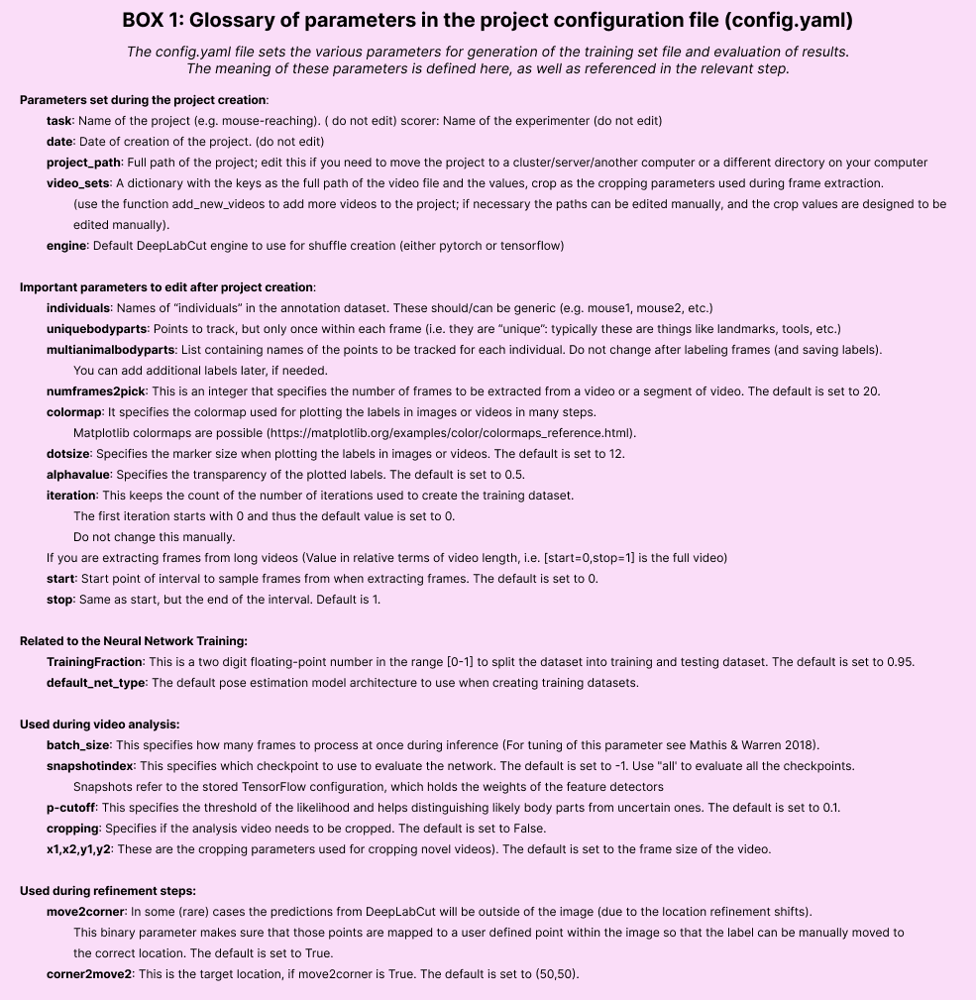

DeepLabCut for Multi-Animal Projects#
This document should serve as the user guide for maDLC, and it is here to support the scientific advances presented in Lauer et al. 2022.
Note, we strongly encourage you to use the Project Manager GUI when you first start using multi-animal mode. Each tab is customized for multi-animal when you create or load a multi-animal project. As long as you follow the recommendations within the GUI, you should be good to go!
Added in version 3.0.0: PyTorch is now available as a deep learning engine for pose estimation models, along with new model architectures! For more information about moving from TensorFlow to PyTorch (if you’re already familiar with DeepLabCut & the TensorFlow engine), check out the PyTorch user guide. If you’re just starting out with DeepLabCut, we suggest you use the PyTorch backend.
How to think about using maDLC:#
You should think of maDLC being four parts.
(1) Curate annotation data that allows you to learn a model to track the objects/animals of interest.
(2) Create a high-quality pose estimation model.
(3) Track in space and time, i.e., assemble bodyparts to detected objects/animals and link across time. This step performs assembly and tracking (comprising first local tracking and then tracklet stitching by global reasoning).
(4) Any and all post-processing you wish to do with the output data, either within DLC or outside of it.
Thus, you should always label, train, and evaluate the pose estimation performance first. If and when that performance is high, then you should go advance to the tracking step (and video analysis). There is a natural break point for this, as you will see below.

Install:#
Quick start: If you are using DeepLabCut on the cloud, or otherwise cannot use the GUIs and you should install with: pip install 'deeplabcut'; if you need GUI support, please use: pip install 'deeplabcut[gui]'. Check the installation page for more information, including GPU support.
IF you want to use the bleeding edge version to make edits to the code, see here on how to install it and test it.
Get started in the terminal or Project GUI:#
GUI: simply launch your conda env, and type python -m deeplabcut in the terminal.
Then follow the tabs! It might be useful to read the following, however, so you understand what each command does.
TERMINAL: To begin, 🚨 (windows) navigate to anaconda prompt and right-click to “open as admin”, or (unix/MacOS) simply launch “terminal” on your computer. We assume you have DeepLabCut installed (if not, see installation instructions). Next, launch your conda env (i.e., for example conda activate DEEPLABCUT).
Hint
🚨 If you use Windows, please always open the terminal with administrator privileges! Right click, and “run as administrator”.
Please read more here, and in our Nature Protocols paper here. And, see our troubleshooting wiki.
Open an ipython session and import the package by typing in the terminal:
ipython
import deeplabcut
Tip
for every function there is a associated help document that can be viewed by adding a ? after the function name; i.e. deeplabcut.create_new_project?. To exit this help screen, type :q.
(A) Create a New Project#
deeplabcut.create_new_project(
"ProjectName",
"YourName",
["/usr/FullPath/OfVideo1.avi", "/usr/FullPath/OfVideo2.avi", "/usr/FullPath/OfVideo1.avi"],
copy_videos=True,
multianimal=True,
)
Tip: if you want to place the project folder somewhere specific, please also pass : working_directory = "FullPathOftheworkingDirectory"
Note, if you are a linux/macOS user the path should look like:
["/home/username/yourFolder/video1.mp4"]; if you are a Windows user, it should look like:[r"C:\username\yourFolder\video1.mp4"]Note, you can also put
config_path =in front of the above line to create the path to the config.yaml that is used in the next step, i.e.config_path=deeplabcut.create_project(...))If you do not, we recommend setting a variable so this can be easily used! Once you run this step, the config_path is printed for you once you run this line, so set a variable for ease of use, i.e. something like:
config_path = '/thefulloutputpath/config.yaml'
just be mindful of the formatting for Windows vs. Unix, see above.
This set of arguments will create a project directory with the name Name of the project+name of the experimenter+date of creation of the project in the Working directory and creates the symbolic links to videos in the videos directory. The project directory will have subdirectories: dlc-models, dlc-models-pytorch, labeled-data, training-datasets, and videos. All the outputs generated during the course of a project will be stored in one of these subdirectories, thus allowing each project to be curated in separation from other projects. The purpose of the subdirectories is as follows:
dlc-models and dlc-models-pytorch have a similar structure: the first contains files for the TensorFlow engine while the second contains files for the PyTorch engine. At the top level in these directories, there are directories referring to different iterations of labels refinement (see below): iteration-0, iteration-1, etc. The refinement iterations directories store shuffle directories, each shuffle directory stores model data related to a particular experiment: trained and tested on a particular training and testing sets, and with a particular model architecture. Each shuffle directory contains the subdirectories test and train, each of which holds the meta information with regard to the parameters of the feature detectors in configuration files. The configuration files are YAML files, a common human-readable data serialization language. These files can be opened and edited with standard text editors. The subdirectory train will store checkpoints (called snapshots) during training of the model. These snapshots allow the user to reload the trained model without re-training it, or to pick-up training from a particular saved checkpoint, in case the training was interrupted.
labeled-data: This directory will store the frames used to create the training dataset. Frames from different videos are stored in separate subdirectories. Each frame has a filename related to the temporal index within the corresponding video, which allows the user to trace every frame back to its origin.
training-datasets: This directory will contain the training dataset used to train the network and metadata, which contains information about how the training dataset was created.
videos: Directory of video links or videos. When copy_videos is set to False, this directory contains symbolic links to the videos. If it is set to True then the videos will be copied to this directory. The default is False. Additionally, if the user wants to add new videos to the project at any stage, the function add_new_videos can be used. This will update the list of videos in the project’s configuration file. Note: you neither need to use this folder for videos, nor is it required for analyzing videos (they can be anywhere).
deeplabcut.add_new_videos(
"Full path of the project configuration file*",
["full path of video 4", "full path of video 5"],
copy_videos=True/False,
)
*Please note, Full path of the project configuration file will be referenced as config_path throughout this protocol.
You can also use annotated data from single-animal projects, by converting those files. There are docs for this: convert single to multianimal annotation data

API Docs#
Click the button to see API Docs
- deeplabcut.create_project.new.create_new_project(project: str, experimenter: str, videos: list[str], working_directory: str | None = None, copy_videos: bool = False, videotype: str = '', multianimal: bool = False, individuals: list[str] | None = None)#
Create the necessary folders and files for a new project.
Creating a new project involves creating the project directory, sub-directories and a basic configuration file. The configuration file is loaded with the default values. Change its parameters to your projects need.
- Parameters:
- projectstring
The name of the project.
- experimenterstring
The name of the experimenter.
- videoslist[str]
A list of strings representing the full paths of the videos to include in the project. If the strings represent a directory instead of a file, all videos of
videotypewill be imported.- working_directorystring, optional
The directory where the project will be created. The default is the
current working directory.- copy_videosbool, optional, Default: False.
If True, the videos are copied to the
videosdirectory. If False, symlinks of the videos will be created in theproject/videosdirectory; in the event of a failure to create symbolic links, videos will be moved instead.- multianimal: bool, optional. Default: False.
For creating a multi-animal project (introduced in DLC 2.2)
- individuals: list[str]|None = None,
Relevant only if multianimal is True. list of individuals to be used in the project configuration. If None - defaults to [‘individual1’, ‘individual2’, ‘individual3’]
- Returns:
- str
Path to the new project configuration file.
Examples
Linux/MacOS:
>>> deeplabcut.create_new_project( project='reaching-task', experimenter='Linus', videos=[ '/data/videos/mouse1.avi', '/data/videos/mouse2.avi', '/data/videos/mouse3.avi' ], working_directory='/analysis/project/', ) >>> deeplabcut.create_new_project( project='reaching-task', experimenter='Linus', videos=['/data/videos'], videotype='.mp4', )
Windows:
>>> deeplabcut.create_new_project( 'reaching-task', 'Bill', [r'C:\yourusername\rig-95\Videos\reachingvideo1.avi'], copy_videos=True, )
Users must format paths with either: r’C:OR ‘C:\ <- i.e. a double backslash )
(B) Configure the Project#
Next, open the config.yaml file, which was created during create_new_project. You can edit this file in any text editor. Familiarize yourself with the meaning of the parameters (Box 1). You can edit various parameters, in particular you must add the list of individuals and bodyparts (or points of interest).

You can also set the colormap here that is used for all downstream steps (can also be edited at anytime), like labeling GUIs, videos, etc. Here any matplotlib colormaps will do!
An easy way to programmatically edit the config file at any time is to use the function edit_config, which takes the full path of the config file to edit and a dictionary of key–value pairs to overwrite.
import deeplabcut
config_path = "/path/to/project-dlc-2025-01-01/config.yaml"
edits = {
"colormap": "summer",
"individuals": ["mickey", "minnie", "bianca"],
"skeleton": [["snout", "tailbase"], ["snout", "rightear"]]
}
deeplabcut.auxiliaryfunctions.edit_config(config_path, edits)
Please DO NOT have spaces in the names of bodyparts, uniquebodyparts, individuals, etc.
ATTENTION: You need to edit the config.yaml file to modify the following items which specify the animal ID, bodyparts, and any unique labels. Note, we also highly recommend that you use more bodyparts that you might be interested in for your experiment, i.e., labeling along the spine/tail for 8 bodyparts would be better than four. This will help the performance.
Modifying the config.yaml is crucial:
individuals:
- m1
- m2
- m3
uniquebodyparts:
- topleftcornerofBox
- toprightcornerofBox
multianimalbodyparts:
- snout
- leftear
- rightear
- tailbase
identity: True/False
Individuals: are names of “individuals” in the annotation dataset. These should/can be generic (e.g. mouse1, mouse2, etc.). These individuals are comprised of the same bodyparts defined by multianimalbodyparts. For annotation in the GUI and training, it is important that all individuals in each frame are labeled. Thus, keep in mind that you need to set individuals to the maximum number in your labeled-data set, .i.e., if there is (even just one frame) with 17 animals then the list should be - indv1 to - indv17. Note, once trained if you have a video with more or less animals, that is fine - you can have more or less animals during video analysis!
Identity: If you can tell the animals apart, i.e., one might have a collar, or a black marker on the tail of a mouse, then you should label these individuals consistently (i.e., always label the mouse with the black marker as “indv1”, etc). If you have this scenario, please set identity: True in your config.yaml file. If you have 4 black mice, and you truly cannot tell them apart, then leave this as false.
Multianimalbodyparts: are the bodyparts of each individual (in the above list).
Uniquebodyparts: are points that you want to track, but that appear only once within each frame, i.e. they are “unique”. Typically these are things like unique objects, landmarks, tools, etc. They can also be animals, e.g. in the case where one German shepherd is attending to many sheep the sheep bodyparts would be multianimalbodyparts, the shepherd parts would be uniquebodyparts and the individuals would be the list of sheep (e.g. Polly, Molly, Dolly, …).
(C) Select Frames to Label#
CRITICAL: A good training dataset should consist of a sufficient number of frames that capture the breadth of the behavior. This ideally implies to select the frames from different (behavioral) sessions, different lighting and different animals, if those vary substantially (to train an invariant, robust feature detector). Thus for creating a robust network that you can reuse in the laboratory, a good training dataset should reflect the diversity of the behavior with respect to postures, luminance conditions, background conditions, animal identities, etc. of the data that will be analyzed. For the simple lab behaviors comprising mouse reaching, open-field behavior and fly behavior, 100−200 frames gave good results Mathis et al, 2018. However, depending on the required accuracy, the nature of behavior, the video quality (e.g. motion blur, bad lighting) and the context, more or less frames might be necessary to create a good network. Ultimately, in order to scale up the analysis to large collections of videos with perhaps unexpected conditions, one can also refine the data set in an adaptive way (see refinement below). For maDLC, be sure you have labeled frames with closely interacting animals!
The function extract_frames extracts frames from all the videos in the project configuration file in order to create a training dataset. The extracted frames from all the videos are stored in a separate subdirectory named after the video file’s name under the ‘labeled-data’. This function also has various parameters that might be useful based on the user’s need.
deeplabcut.extract_frames(
config_path,
mode='automatic/manual',
algo='uniform/kmeans',
userfeedback=False,
crop=True/False,
)
CRITICAL POINT: It is advisable to keep the frame size small, as large frames increase the training and
inference time, or you might not have a large enough GPU for this.
When running the function extract_frames, if the parameter crop=True, then you will be asked to draw a box within the GUI (and this is written to the config.yaml file).
userfeedback allows the user to check which videos they wish to extract frames from. In this way, if you added more videos to the config.yaml file it does not, by default, extract frames (again) from every video. If you wish to disable this question, set userfeedback = True.
The provided function either selects frames from the videos in a randomly and temporally uniformly distributed way (uniform), by clustering based on visual appearance (k-means), or by manual selection. Random selection of frames works best for behaviors where the postures vary across the whole video. However, some behaviors might be sparse, as in the case of reaching where the reach and pull are very fast and the mouse is not moving much between trials (thus, we have the default set to True, as this is best for most use-cases we encounter). In such a case, the function that allows selecting frames based on k-means derived quantization would be useful. If the user chooses to use k-means as a method to cluster the frames, then this function downsamples the video and clusters the frames using k-means, where each frame is treated as a vector. Frames from different clusters are then selected. This procedure makes sure that the frames look different. However, on large and long videos, this code is slow due to computational complexity.
CRITICAL POINT: It is advisable to extract frames from a period of the video that contains interesting behaviors, and not extract the frames across the whole video. This can be achieved by using the start and stop parameters in the config.yaml file. Also, the user can change the number of frames to extract from each video using the numframes2extract in the config.yaml file.
Tip
For maDLC, be sure you have labeled frames with closely interacting animals! Therefore, manually selecting some frames is a good idea if interactions are not highly frequent in the video.
However, picking frames is highly dependent on the data and the behavior being studied. Therefore, it is hard to provide all purpose code that extracts frames to create a good training dataset for every behavior and animal. If the user feels specific frames are lacking, they can extract hand selected frames of interest using the interactive GUI provided along with the toolbox. This can be launched by using:
deeplabcut.extract_frames(config_path, 'manual')
// FIXME(niels) - add a napari frame extractor description. The user can use the Load Video button to load one of the videos in the project configuration file, use the scroll bar to navigate across the video and Grab a Frame. The user can also look at the extracted frames and e.g. delete frames (from the directory) that are too similar before reloading the set and then manually annotating them.
Click the button to see API Docs
- deeplabcut.generate_training_dataset.frame_extraction.extract_frames(config, mode='automatic', algo='kmeans', crop=False, userfeedback=True, cluster_step=1, cluster_resizewidth=30, cluster_color=False, opencv=True, slider_width=25, config3d=None, extracted_cam=0, videos_list=None)#
Extracts frames from the project videos.
Frames will be extracted from videos listed in the config.yaml file.
The frames are selected from the videos in a randomly and temporally uniformly distributed way (
uniform), by clustering based on visual appearance (k-means), or by manual selection.After frames have been extracted from all videos from one camera, matched frames from other cameras can be extracted using
mode = "match". This is necessary if you plan to use epipolar lines to improve labeling across multiple camera angles. It will overwrite previously extracted images from the second camera angle if necessary.Please refer to the user guide for more details on methods and parameters https://www.nature.com/articles/s41596-019-0176-0 or the preprint: https://www.biorxiv.org/content/biorxiv/early/2018/11/24/476531.full.pdf
- Parameters:
- configstring
Full path of the config.yaml file as a string.
- modestring. Either
"automatic","manual"or"match". String containing the mode of extraction. It must be either
"automatic"or"manual"to extract the initial set of frames. It can also be"match"to match frames between the cameras in preparation for the use of epipolar line during labeling; namely, extract from camera_1 first, then run this to extract the matched frames in camera_2.WARNING: if you use
"match", and you previously extracted and labeled frames from the second camera, this will overwrite your data. This will require you to delete thecollectdata(.h5/.csv)files before labeling. Use with caution!- algostring, Either
"kmeans"or"uniform", Default: “kmeans”. String specifying the algorithm to use for selecting the frames. Currently, deeplabcut supports either
kmeansoruniformbased selection. This flag is only required forautomaticmode and the default iskmeans. For"uniform", frames are picked in temporally uniform way,"kmeans"performs clustering on downsampled frames (see user guide for details).NOTE: Color information is discarded for
"kmeans", thus e.g. for camouflaged octopus clustering one might want to change this.- cropbool or str, optional
If
True, video frames are cropped according to the corresponding coordinates stored in the project configuration file. Alternatively, if cropping coordinates are not known yet, crop=``”GUI”`` triggers a user interface where the cropping area can be manually drawn and saved.- userfeedback: bool, optional
If this is set to
Falseduring"automatic"mode then frames for all videos are extracted. The user can set this to"True", which will result in a dialog, where the user is asked for each video if (additional/any) frames from this video should be extracted. Use this, e.g. if you have already labeled some folders and want to extract data for new videos.- cluster_resizewidth: int, default: 30
For
"k-means"one can change the width to which the images are downsampled (aspect ratio is fixed).- cluster_step: int, default: 1
By default each frame is used for clustering, but for long videos one could only use every nth frame (set using this parameter). This saves memory before clustering can start, however, reading the individual frames takes longer due to the skipping.
- cluster_color: bool, default: False
If
"False"then each downsampled image is treated as a grayscale vector (discarding color information). If"True", then the color channels are considered. This increases the computational complexity.- opencv: bool, default: True
Uses openCV for loading & extractiong (otherwise moviepy (legacy)).
- slider_width: int, default: 25
Width of the video frames slider, in percent of window.
- config3d: string, optional
Path to the project configuration file in the 3D project. This will be used to match frames extracted from all cameras present in the field ‘camera_names’ to the frames extracted from the camera given by the parameter ‘extracted_cam’.
- extracted_cam: int, default: 0
The index of the camera that already has extracted frames. This will match frame numbers to extract for all other cameras. This parameter is necessary if you wish to use epipolar lines in the labeling toolbox. Only use if
mode='match'andconfig3dis provided.- videos_list: list[str], Default: None
A list of the string containing full paths to videos to extract frames for. If this is left as
Noneall videos specified in the config file will have frames extracted. Otherwise one can select a subset by passing those paths.
- Returns:
- None
Notes
Use the function
add_new_videosat any stage of the project to add new videos to the config file and extract their frames.The following parameters for automatic extraction are used from the config file
numframes2pickstartandstop
While selecting the frames manually, you do not need to specify the
cropparameter in the command. Rather, you will get a prompt in the graphic user interface to choose if you need to crop or not.Examples
To extract frames automatically with ‘kmeans’ and then crop the frames
>>> deeplabcut.extract_frames( config='/analysis/project/reaching-task/config.yaml', mode='automatic', algo='kmeans', crop=True, )
To extract frames automatically with ‘kmeans’ and then defining the cropping area using a GUI
>>> deeplabcut.extract_frames( '/analysis/project/reaching-task/config.yaml', 'automatic', 'kmeans', 'GUI', )
To consider the color information when extracting frames automatically with ‘kmeans’
>>> deeplabcut.extract_frames( '/analysis/project/reaching-task/config.yaml', 'automatic', 'kmeans', cluster_color=True, )
To extract frames automatically with ‘uniform’ and then crop the frames
>>> deeplabcut.extract_frames( '/analysis/project/reaching-task/config.yaml', 'automatic', 'uniform', crop=True, )
To extract frames manually
>>> deeplabcut.extract_frames( '/analysis/project/reaching-task/config.yaml', 'manual' )
To extract frames manually, with a 60% wide frames slider
>>> deeplabcut.extract_frames( '/analysis/project/reaching-task/config.yaml', 'manual', slider_width=60, )
To extract frames from a second camera that match the frames extracted from the first
>>> deeplabcut.extract_frames( '/analysis/project/reaching-task/config.yaml', mode='match', extracted_cam=0, )
(D) Label Frames#
deeplabcut.label_frames(config_path)
The toolbox provides a function label_frames which helps the user to easily label all the extracted frames using an interactive graphical user interface (GUI). The user should have already named the bodyparts to label (points of interest) in the project’s configuration file by providing a list. The following command invokes the napari-deeplabcut labelling GUI.
HOT KEYS IN THE Labeling GUI (also see “help” in GUI):
Ctrl + C: Copy labels from previous frame.
Keyboard arrows: advance frames.
Delete key: delete label.

CRITICAL POINT: It is advisable to consistently label similar spots (e.g., on a wrist that is very large, try to label the same location). In general, invisible or occluded points should not be labeled by the user, unless you want to teach the network to “guess” - this is possible, but could affect accuracy. If you don’t want/or don’t see a bodypart, they can simply be skipped by not applying the label anywhere on the frame.
OPTIONAL: In the event of adding more labels to the existing labeled dataset, the user needs to append the new labels to the bodyparts in the config.yaml file. Thereafter, the user can call the function label_frames. A box will pop up and ask the user if they wish to display all parts, or only add in the new labels. Saving the labels after all the images are labelled will append the new labels to the existing labeled dataset.
maDeepLabCut CRITICAL POINT: For multi-animal labeling, unless you can tell apart the animals, you do not need to worry about the “ID” of each animal. For example: if you have a white and black mouse label the white mouse as animal 1, and black as animal 2 across all frames. If two black mice, then the ID label 1 or 2 can switch between frames - no need for you to try to identify them (but always label consistently within a frame). If you have 2 black mice but one always has an optical fiber (for example), then DO label them consistently as animal1 and animal_fiber (for example). The point of multi-animal DLC is to train models that can first group the correct bodyparts to individuals, then associate those points in a given video to a specific individual, which then also uses temporal information to link across the video frames.
Note, we also highly recommend that you use more bodyparts that you might otherwise have (see the example below).
For more information, checkout the napari-deeplabcut docs for more information about the labelling workflow.
(E) Check Annotated Frames#
Checking if the labels were created and stored correctly is beneficial for training, since labeling
is one of the most critical parts for creating the training dataset. The DeepLabCut toolbox provides a function
check_labels to do so. It is used as follows:
deeplabcut.check_labels(config_path, visualizeindividuals=True/False)
maDeepLabCut: you can check and plot colors per individual or per body part, just set the flag visualizeindividuals=True/False. Note, you can run this twice in both states to see both images.

For each video directory in labeled-data this function creates a subdirectory with labeled as a suffix. Those directories contain the frames plotted with the annotated body parts. The user can double check if the body parts are labeled correctly. If they are not correct, the user can reload the frames (i.e. deeplabcut.label_frames), move them around, and click save again.
Click the button to see API Docs
- deeplabcut.generate_training_dataset.trainingsetmanipulation.check_labels(config, Labels=['+', '.', 'x'], scale=1, dpi=100, draw_skeleton=True, visualizeindividuals=True)#
Check the labeled frames.
Double check if the labels were at the correct locations and stored in the proper file format.
This creates a new subdirectory for each video under the ‘labeled-data’ and all the frames are plotted with the labels.
Make sure that these labels are fine.
- Parameters:
- configstring
Full path of the config.yaml file as a string.
- Labels: list, default=’+’
List of at least 3 matplotlib markers. The first one will be used to indicate the human ground truth location (Default: +)
- scalefloat, default=1
Change the relative size of the output images.
- dpiint, optional, default=100
Output resolution in dpi.
- draw_skeleton: bool, default=True
Plot skeleton overlaid over body parts.
- visualizeindividuals: bool, default: True.
For a multianimal project, if True, the different individuals have different colors (and all bodyparts the same). If False, the colors change over bodyparts rather than individuals.
- Returns:
- None
Examples
>>> deeplabcut.check_labels('/analysis/project/reaching-task/config.yaml')
(F) Create Training Dataset#
At this point, you’ll need to select your neural network type.
For the PyTorch engine, please see the PyTorch Model Architectures for options.
For the TensorFlow engine, please see Lauer et al. 2021 for options. Multi-animal
models will use imgaug, ADAM optimization, our new DLCRNet, and batch training. We
suggest keeping these defaults at this time. At this step, the ImageNet pre-trained
networks (i.e. ResNet-50) weights will be downloaded. If they do not download (you will
see this downloading in the terminal, then you may not have permission to do so (
something we have seen with some Windows users - see the
WIKI troubleshooting for more help!).
Then run:
deeplabcut.create_training_dataset(config_path)
The set of arguments in the function will shuffle the combined labeled dataset and split it to create train and test sets. The subdirectory with suffix
iteration#under the directory training-datasets stores the dataset and meta information, where the#is the value ofiterationvariable stored in the project’s configuration file (this number keeps track of how often the dataset was refined).OPTIONAL: If the user wishes to benchmark the performance of the DeepLabCut, they can create multiple training datasets by specifying an integer value to the
num_shuffles; see the docstring for more details.Each iteration of the creation of a training dataset will create several files, which is used by the feature detectors, and a
.picklefile that contains the meta information about the training dataset. This also creates two subdirectories within dlc-models-pytorch (dlc-models for the TensorFlow engine) calledtestandtrain, and these each have a configuration file called pose_cfg.yaml. Specifically, the user can edit the pytorch_config.yaml (pose_cfg.yaml for TensorFlow engine) within the train subdirectory before starting the training. These configuration files contain meta information with regard to the parameters of the feature detectors. Key parameters are listed in Box 2.
DATA AUGMENTATION: At this stage you can also decide what type of augmentation to
use. Once you’ve called create_training_dataset, you can edit the
pytorch_config.yaml file that was created (or for the
TensorFlow engine, the pose_cfg.yaml file).
PyTorch Engine: Albumentations is used for data augmentation. Look at the pytorch_config.yaml for more information about image augmentation options.
TensorFlow Engine: The default augmentation works well for most tasks (as shown on www.deeplabcut.org), but there are many options, more data augmentation, intermediate supervision, etc. Only
imgaugaugmentation is available for multi-animal projects.
A Primer on Motion Capture with Deep Learning: Principles, Pitfalls, and Perspectives, details the advantage of augmentation for a worked example (see Fig 8). TL;DR: use imgaug and use the symmetries of your data!
Importantly, image cropping as previously done with deeplabcut.cropimagesandlabels in multi-animal projects
is now part of the augmentation pipeline. In other words, image crops are no longer stored in labeled-data/…_cropped
folders. Crop size still defaults to (400, 400); if your images are very large (e.g. 2k, 4k pixels), consider increasing the crop size, but be aware unless you have a strong GPU (24 GB memory or more), you will hit memory errors. You can lower the batch size, but this may affect performance.
In addition, one can specify a crop sampling strategy: crop centers can either be taken at random over the image (uniform) or the annotated keypoints (keypoints); with a focus on regions of the scene with high body part density (density); last, combining uniform and density for a hybrid balanced strategy (this is the default strategy). Note that both parameters can be easily edited prior to training in the pose_cfg.yaml configuration file.
As a reminder, cropping images into smaller patches is a form of data augmentation that simultaneously
allows the use of batch processing even on small GPUs that could not otherwise accommodate larger images + larger batchsizes (this usually increases performance and decreasing training time).
MODEL COMPARISON: You can also test several models by creating the same train/test split for different networks. You can easily do this in the Project Manager GUI (by selecting the “Use an existing data split” option), which also lets you compare PyTorch and TensorFlow models.
Added in version 3.0.0: You can now create new shuffles using the same train/test split as
existing shuffles with create_training_dataset_from_existing_split. This allows you to
compare model performance (between different architectures or when using different
training hyper-parameters) as the shuffles were trained on the same data, and evaluated
on the same test data!
Example usage - creating 3 new shuffles (with indices 10, 11 and 12) for a ResNet 50 pose estimation model, using the same data split as was used for shuffle 0:
deeplabcut.create_training_dataset_from_existing_split(
config_path,
from_shuffle=0,
shuffles=[10, 11, 12],
net_type="resnet_50",
)
Click the button to see API Docs for deeplabcut.create_training_dataset
- deeplabcut.generate_training_dataset.trainingsetmanipulation.create_training_dataset(config, num_shuffles=1, Shuffles=None, windows2linux=False, userfeedback=True, trainIndices=None, testIndices=None, net_type=None, detector_type=None, augmenter_type=None, posecfg_template=None, superanimal_name='', weight_init: WeightInitialization | None = None, engine: Engine | None = None, ctd_conditions: int | str | Path | tuple[int, str] | tuple[int, int] | None = None)#
Creates a training dataset.
Labels from all the extracted frames are merged into a single .h5 file. Only the videos included in the config file are used to create this dataset.
- Parameters:
- configstring
Full path of the
config.yamlfile as a string.- num_shufflesint, optional, default=1
Number of shuffles of training dataset to create, i.e.
[1,2,3]fornum_shuffles=3.- Shuffles: list[int], optional
Alternatively the user can also give a list of shuffles.
- userfeedback: bool, optional, default=True
If
False, all requested train/test splits are created (no matter if they already exist). If you want to assure that previous splits etc. are not overwritten, set this toTrueand you will be asked for each split.- trainIndices: list of lists, optional, default=None
List of one or multiple lists containing train indexes. A list containing two lists of training indexes will produce two splits.
- testIndices: list of lists, optional, default=None
List of one or multiple lists containing test indexes.
- net_type: list, optional, default=None
Type of networks. The options available depend on which engine is used. Currently supported options are:
- TensorFlow
resnet_50resnet_101resnet_152mobilenet_v2_1.0mobilenet_v2_0.75mobilenet_v2_0.5mobilenet_v2_0.35efficientnet-b0efficientnet-b1efficientnet-b2efficientnet-b3efficientnet-b4efficientnet-b5efficientnet-b6
PyTorch (call
deeplabcut.pose_estimation_pytorch.available_models()for a complete list)animaltokenpose_basecspnext_mcspnext_scspnext_xctd_coam_w32ctd_coam_w48ctd_prenet_cspnext_mctd_prenet_cspnext_xctd_prenet_rtmpose_x_humanctd_prenet_hrnet_w32ctd_prenet_hrnet_w48ctd_prenet_rtmpose_mctd_prenet_rtmpose_xctd_prenet_rtmpose_x_humandekr_w18dekr_w32dekr_w48dlcrnet_stride16_ms5dlcrnet_stride32_ms5hrnet_w18hrnet_w32hrnet_w48resnet_101resnet_50rtmpose_mrtmpose_srtmpose_xtop_down_cspnext_mtop_down_cspnext_stop_down_cspnext_xtop_down_hrnet_w18top_down_hrnet_w32top_down_hrnet_w48top_down_resnet_101top_down_resnet_50
- detector_type: string, optional, default=None
Only for the PyTorch engine. When passing creating shuffles for top-down models, you can specify which detector you want. If the detector_type is None, the
`ssdlite`will be used. The list of all available detectors can be obtained by callingdeeplabcut.pose_estimation_pytorch.available_detectors(). Supported options:ssdlitefasterrcnn_mobilenet_v3_large_fpnfasterrcnn_resnet50_fpn_v2
- augmenter_type: string, optional, default=None
Type of augmenter. The options available depend on which engine is used. Currently supported options are:
- TensorFlow
defaultscalecropimgaugtensorpackdeterministic
- PyTorch
albumentations
- posecfg_template: string, optional, default=None
Only for the TensorFlow engine. Path to a
pose_cfg.yamlfile to use as a template for generating the new one for the current iteration. Useful if you would like to start with the same parameters a previous training iteration. None uses the defaultpose_cfg.yaml.- superanimal_name: string, optional, default=””
Only for the TensorFlow engine. For the PyTorch engine, use the
weight_initparameter. Specify the superanimal name is transfer learning with superanimal is desired. This makes sure the pose config template uses superanimal configs as template.- weight_init: WeightInitialisation, optional, default=None
PyTorch engine only. Specify how model weights should be initialized. The default mode uses transfer learning from ImageNet weights.
- engine: Engine, optional
Whether to create a pose config for a Tensorflow or PyTorch model. Defaults to the value specified in the project configuration file. If no engine is specified for the project, defaults to
deeplabcut.compat.DEFAULT_ENGINE.- ctd_conditions: int | str | Path | tuple[int, str] | tuple[int, int] | None, default = None,
If using a conditional-top-down (CTD) net_type, this argument should be specified. It defines the conditions that will be used with the CTD model. It can be either:
- A shuffle number (ctd_conditions: int), which must correspond to a
bottom-up (BU) network type.
- A predictions file path (ctd_conditions: string | Path), which must
correspond to a .json or .h5 predictions file.
- A shuffle number and a particular snapshot
(ctd_conditions: tuple[int, str] | tuple[int, int]), which respectively correspond to a bottom-up (BU) network type and a particular snapshot name or index.
- Returns:
- list(tuple) or None
If training dataset was successfully created, a list of tuples is returned. The first two elements in each tuple represent the training fraction and the shuffle value. The last two elements in each tuple are arrays of integers representing the training and test indices.
Returns None if training dataset could not be created.
Notes
Use the function
add_new_videosat any stage of the project to add more videos to the project.Examples
Linux/MacOS: >>> deeplabcut.create_training_dataset(
‘/analysis/project/reaching-task/config.yaml’, num_shuffles=1,
)
>>> deeplabcut.create_training_dataset( '/analysis/project/reaching-task/config.yaml', Shuffles=[2], engine=deeplabcut.Engine.TF, )
Windows: >>> deeplabcut.create_training_dataset(
‘C:UsersUlflooming-taskconfig.yaml’, Shuffles=[3,17,5],
)
Click the button to see API Docs for deeplabcut.create_training_model_comparison
- deeplabcut.generate_training_dataset.trainingsetmanipulation.create_training_model_comparison(config, trainindex=0, num_shuffles=1, net_types=['resnet_50'], augmenter_types=['imgaug'], userfeedback=False, windows2linux=False)#
Creates a training dataset to compare networks and augmentation types.
The datasets are created such that the shuffles have same training and testing indices. Therefore, this function is useful for benchmarking the performance of different network and augmentation types on the same training/testdata.
- Parameters:
- config: str
Full path of the config.yaml file.
- trainindex: int, optional, default=0
Either (in case uniform = True) indexes which element of TrainingFraction in the config file should be used (note it is a list!). Alternatively (uniform = False) indexes which folder is dropped, i.e. the first if trainindex=0, the second if trainindex=1, etc.
- num_shufflesint, optional, default=1
Number of shuffles of training dataset to create, i.e. [1,2,3] for num_shuffles=3.
- net_types: list[str], optional, default=[“resnet_50”]
Currently supported networks are
"resnet_50""resnet_101""resnet_152""mobilenet_v2_1.0""mobilenet_v2_0.75""mobilenet_v2_0.5""mobilenet_v2_0.35""efficientnet-b0""efficientnet-b1""efficientnet-b2""efficientnet-b3""efficientnet-b4""efficientnet-b5""efficientnet-b6"
- augmenter_types: list[str], optional, default=[“imgaug”]
Currently supported augmenters are
"default""imgaug""tensorpack""deterministic"
- userfeedback: bool, optional, default=False
If
False, then all requested train/test splits are created, no matter if they already exist. If you want to assure that previous splits etc. are not overwritten, then set this to True and you will be asked for each split.- windows2linux
- ..deprecated::
Has no effect since 2.2.0.4 and will be removed in 2.2.1.
- Returns:
- shuffle_list: list
List of indices corresponding to the trainingsplits/models that were created.
Examples
On Linux/MacOS
>>> shuffle_list = deeplabcut.create_training_model_comparison( '/analysis/project/reaching-task/config.yaml', num_shuffles=1, net_types=['resnet_50','resnet_152'], augmenter_types=['tensorpack','deterministic'], )
On Windows
>>> shuffle_list = deeplabcut.create_training_model_comparison( 'C:\Users\Ulf\looming-task\config.yaml', num_shuffles=1, net_types=['resnet_50','resnet_152'], augmenter_types=['tensorpack','deterministic'], )
See
examples/testscript_openfielddata_augmentationcomparison.pyfor an example of how to useshuffle_list.
Click the button to see API Docs for deeplabcut.create_training_dataset_from_existing_split
- deeplabcut.generate_training_dataset.trainingsetmanipulation.create_training_dataset_from_existing_split(config: str, from_shuffle: int, from_trainsetindex: int = 0, num_shuffles: int = 1, shuffles: list[int] | None = None, userfeedback: bool = True, net_type: str | None = None, detector_type: str | None = None, augmenter_type: str | None = None, ctd_conditions: int | str | Path | tuple[int, str] | tuple[int, int] | None = None, posecfg_template: dict | None = None, superanimal_name: str = '', weight_init: WeightInitialization | None = None, engine: Engine | None = None) None | list[int]#
Labels from all the extracted frames are merged into a single .h5 file. Only the videos included in the config file are used to create this dataset.
- Args:
config: Full path of the
config.yamlfile as a string.from_shuffle: The index of the shuffle from which to copy the train/test split.
- from_trainsetindex: The trainset index of the shuffle from which to use the data
split. Default is 0.
- num_shuffles: Number of shuffles of training dataset to create, used if
shufflesis None.- shuffles: If defined,
num_shufflesis ignored and a shuffle is created for each index given in the list.
- userfeedback: If
False, all requested train/test splits are created (no matter if they already exist). If you want to assure that previous splits etc. are not overwritten, set this to
Trueand you will be asked for each existing split if you want to overwrite it.- net_type: The type of network to create the shuffle for. Currently supported
- options for engine=Engine.TF are:
resnet_50resnet_101resnet_152mobilenet_v2_1.0mobilenet_v2_0.75mobilenet_v2_0.5mobilenet_v2_0.35efficientnet-b0efficientnet-b1efficientnet-b2efficientnet-b3efficientnet-b4efficientnet-b5efficientnet-b6
Currently supported options for engine=Engine.TF can be obtained by calling
deeplabcut.pose_estimation_pytorch.available_models().- detector_type: string, optional, default=None
Only for the PyTorch engine. When passing creating shuffles for top-down models, you can specify which detector you want. If the detector_type is None, the
`ssdlite`will be used. The list of all available detectors can be obtained by callingdeeplabcut.pose_estimation_pytorch.available_detectors(). Supported options:ssdlitefasterrcnn_mobilenet_v3_large_fpnfasterrcnn_resnet50_fpn_v2
- augmenter_type: Type of augmenter. Currently supported augmenters for
- engine=Engine.TF are
defaultscalecropimgaugtensorpackdeterministic
The only supported augmenter for Engine.PYTORCH is
albumentations.- posecfg_template: Only for Engine.TF. Path to a
pose_cfg.yamlfile to use as a template for generating the new one for the current iteration. Useful if you would like to start with the same parameters a previous training iteration. None uses the default
pose_cfg.yaml.- superanimal_name: Specify the superanimal name is transfer learning with
superanimal is desired. This makes sure the pose config template uses superanimal configs as template.
- weight_init: Only for Engine.PYTORCH. Specify how model weights should be
initialized. The default mode uses transfer learning from ImageNet weights.
- engine: Whether to create a pose config for a Tensorflow or PyTorch model.
Defaults to the value specified in the project configuration file. If no engine is specified for the project, defaults to
deeplabcut.compat.DEFAULT_ENGINE.- ctd_conditions: int | str | Path | tuple[int, str] | tuple[int, int] | None, default = None,
If using a conditional-top-down (CTD) net_type, this argument should be specified. It defines the conditions that will be used with the CTD model. It can be either:
A shuffle number (ctd_conditions: int), which must correspond to a bottom-up (BU) network type.
A predictions file path (ctd_conditions: string | Path), which must correspond to a .json or .h5 predictions file.
A shuffle number and a particular snapshot (ctd_conditions: tuple[int, str] | tuple[int, int]), which respectively correspond to a bottom-up (BU) network type and a particular snapshot name or index.
- Returns:
If training dataset was successfully created, a list of tuples is returned. The first two elements in each tuple represent the training fraction and the shuffle value. The last two elements in each tuple are arrays of integers representing the training and test indices.
Returns None if training dataset could not be created.
- Raises:
ValueError: If the shuffle from which to copy the data split doesn’t exist.
(G) Train The Network#
deeplabcut.train_network(config_path, shuffle=1)
The set of arguments in the function starts training the network for the dataset created for one specific shuffle. Note that you can change training parameters in the pytorch_config.yaml file (or pose_cfg.yaml for TensorFlow models) of the model that you want to train (before you start training).
At user specified iterations during training checkpoints are stored in the subdirectory train under the respective iteration & shuffle directory.
Tips on training models with the PyTorch Engine
Example parameters that one can call:
deeplabcut.train_network(
config_path,
shuffle=1,
trainingsetindex=0,
device="cuda:0",
max_snapshots_to_keep=5,
displayiters=100,
save_epochs=5,
epochs=200,
)
Pytorch models in DeepLabCut 3.0 are trained for a set number of epochs, instead of a maximum number of iterations (which is what was used for TensorFlow models). An epoch is a single pass through the training dataset, which means your model has seen each training image exactly once. So if you have 64 training images for your network, an epoch is 64 iterations with batch size 1 (or 32 iterations with batch size 2, 16 with batch size 4, etc.).
By default, the pretrained networks are not in the DeepLabCut toolbox (as they can be more than 100MB), but they get downloaded automatically before you train.
If the user wishes to restart the training at a specific checkpoint they can specify the
full path of the checkpoint to the variable resume_training_from in the
pytorch_config.yaml file (checkout the “Restarting Training at a Specific Checkpoint”
section of the docs) under the train subdirectory.
CRITICAL POINT: It is recommended to train the networks until the loss plateaus (depending on the dataset, model architecture and training hyper-parameters this happens after 100 to 250 epochs of training).
The variables display_iters and save_epochs in the pytorch_config.yaml file allows the user to alter how often the loss is displayed
and how often the weights are stored. We suggest saving every 5 to 25 epochs.
Tips on training models with the TensorFlow Engine
Example parameters that one can call:
deeplabcut.train_network(
config_path,
shuffle=1,
trainingsetindex=0,
gputouse=None,
max_snapshots_to_keep=5,
autotune=False,
displayiters=100,
saveiters=15000,
maxiters=30000,
allow_growth=True,
)
By default, the pretrained networks are not in the DeepLabCut toolbox (as they are around 100MB each), but they get downloaded before you train. However, if not previously downloaded from the TensorFlow model weights, it will be downloaded and stored in a subdirectory pre-trained under the subdirectory models in Pose_Estimation_Tensorflow. At user specified iterations during training checkpoints are stored in the subdirectory train under the respective iteration directory.
If the user wishes to restart the training at a specific checkpoint they can specify the
full path of the checkpoint to the variable init_weights in the pose_cfg.yaml
file under the train subdirectory (see Box 2).
CRITICAL POINT: It is recommended to train the networks for thousands of iterations until the loss plateaus (typically around 500,000) if you use batch size 1, and 50-100K if you use batchsize 8 (the default).
If you use maDeepLabCut the recommended training iterations is 20K-100K (it automatically stops at 200K!), as we use Adam and batchsize 8; if you have to reduce the batchsize for memory reasons then the number of iterations needs to be increased.
The variables display_iters and save_iters in the pose_cfg.yaml file allows
the user to alter how often the loss is displayed and how often the weights are stored.
maDeepLabCut CRITICAL POINT: For multi-animal projects we are using not only
different and new output layers, but also new data augmentation, optimization, learning
rates, and batch training defaults. Thus, please use a lower save_iters and
maxiters. I.e. we suggest saving every 10K-15K iterations, and only training until
50K-100K iterations. We recommend you look closely at the loss to not overfit on your
data. The bonus, training time is much less!!!
Click the button to see API Docs for train_network
- deeplabcut.compat.train_network(config: str | Path, shuffle: int = 1, trainingsetindex: int = 0, max_snapshots_to_keep: int | None = None, displayiters: int | None = None, saveiters: int | None = None, maxiters: int | None = None, epochs: int | None = None, save_epochs: int | None = None, allow_growth: bool = True, gputouse: str | None = None, autotune: bool = False, keepdeconvweights: bool = True, modelprefix: str = '', superanimal_name: str = '', superanimal_transfer_learning: bool = False, engine: Engine | None = None, device: str | None = None, snapshot_path: str | Path | None = None, detector_path: str | Path | None = None, batch_size: int | None = None, detector_batch_size: int | None = None, detector_epochs: int | None = None, detector_save_epochs: int | None = None, pose_threshold: float | None = 0.1, pytorch_cfg_updates: dict | None = None)#
Trains the network with the labels in the training dataset.
- Parameters:
- configstring
Full path of the config.yaml file as a string.
- shuffle: int, optional, default=1
Integer value specifying the shuffle index to select for training.
- trainingsetindex: int, optional, default=0
Integer specifying which TrainingsetFraction to use. Note that TrainingFraction is a list in config.yaml.
- max_snapshots_to_keep: int or None
Sets how many snapshots are kept, i.e. states of the trained network. Every saving iteration many times a snapshot is stored, however only the last
max_snapshots_to_keepmany are kept! If you change this to None, then all are kept. See: DeepLabCut/DeepLabCut#8- displayiters: optional, default=None
This variable is actually set in
pose_config.yaml. However, you can overwrite it with this hack. Don’t use this regularly, just if you are too lazy to dig out thepose_config.yamlfile for the corresponding project. IfNone, the value from there is used, otherwise it is overwritten!- saveiters: optional, default=None
Only for the TensorFlow engine (for the PyTorch engine see the
torch_kwargs: you can usesave_epochs). This variable is actually set inpose_config.yaml. However, you can overwrite it with this hack. Don’t use this regularly, just if you are too lazy to dig out thepose_config.yamlfile for the corresponding project. IfNone, the value from there is used, otherwise it is overwritten!- maxiters: optional, default=None
Only for the TensorFlow engine (for the PyTorch engine see the
torch_kwargs: you can useepochs). This variable is actually set inpose_config.yaml. However, you can overwrite it with this hack. Don’t use this regularly, just if you are too lazy to dig out thepose_config.yamlfile for the corresponding project. IfNone, the value from there is used, otherwise it is overwritten!- epochs: optional, default=None
Only for the PyTorch engine (equivalent to the maxiters parameter for the TensorFlow engine). The maximum number of epochs to train the model for. If None, the value will be read from the pytorch_config.yaml file. An epoch is a single pass through the training dataset, which means your model has seen each training image exactly once. So if you have 64 training images for your network, an epoch is 64 iterations with batch size 1 (or 32 iterations with batch size 2, 16 with batch size 4, etc.).
- save_epochs: optional, default=None
Only for the PyTorch engine (equivalent to the saveiters parameter for the TensorFlow engine). The number of epochs between each snapshot save. If None, the value will be read from the pytorch_config.yaml file.
- allow_growth: bool, optional, default=True.
Only for the TensorFlow engine. For some smaller GPUs the memory issues happen. If
True, the memory allocator does not pre-allocate the entire specified GPU memory region, instead starting small and growing as needed. See issue: https://forum.image.sc/t/how-to-stop-running-out-of-vram/30551/2- gputouse: optional, default=None
Only for the TensorFlow engine (for the PyTorch engine see the
torch_kwargs: you can usedevice). Natural number indicating the number of your GPU (see number in nvidia-smi). If you do not have a GPU put None. See: https://nvidia.custhelp.com/app/answers/detail/a_id/3751/~/useful-nvidia-smi-queries- autotune: bool, optional, default=False
Only for the TensorFlow engine. Property of TensorFlow, somehow faster if
False(as Eldar found out, see tensorflow/tensorflow#13317).- keepdeconvweights: bool, optional, default=True
Also restores the weights of the deconvolution layers (and the backbone) when training from a snapshot. Note that if you change the number of bodyparts, you need to set this to false for re-training.
- modelprefix: str, optional, default=””
Directory containing the deeplabcut models to use when evaluating the network. By default, the models are assumed to exist in the project folder.
- superanimal_name: str, optional, default =””
Only for the TensorFlow engine. For the PyTorch engine, you need to specify this through the
weight_initwhen creating the training dataset. Specified if transfer learning with superanimal is desired- superanimal_transfer_learning: bool, optional, default = False.
Only for the TensorFlow engine. For the PyTorch engine, you need to specify this through the
weight_initwhen creating the training dataset. If set true, the training is transfer learning (new decoding layer). If set false, and superanimal_name is True, then the training is fine-tuning (reusing the decoding layer)- engine: Engine, optional, default = None.
The default behavior loads the engine for the shuffle from the metadata. You can overwrite this by passing the engine as an argument, but this should generally not be done.
- device: str, optional, default = None.
Only for the PyTorch engine. The device to run the training on (e.g. “cuda:0”)
- snapshot_path: str or Path, optional, default = None.
Only for the PyTorch engine. The path to the pose model snapshot to resume training from.
- detector_path: str or Path, optional, default = None.
Only for the PyTorch engine. The path to the detector model snapshot to resume training from.
- batch_size: int, optional, default = None.
Only for the PyTorch engine. The batch size to use while training.
- detector_batch_size: int, optional, default = None.
Only for the PyTorch engine. The batch size to use while training the detector.
- detector_epochs: int, optional, default = None.
Only for the PyTorch engine. The number of epochs to train the detector for.
- detector_save_epochs: int, optional, default = None.
Only for the PyTorch engine. The number of epochs between each detector snapshot save.
- pose_threshold: float, optional, default = 0.1.
- Only for the PyTorch engine. Used for memory-replay. Pseudo-predictions with confidence lower
than this threshold are discarded for memory-replay
- pytorch_cfg_updates: dict, optional, default = None.
A dictionary of updates to the pytorch config. The keys are the dot-separated paths to the values to update in the config. For example, to update the gpus to run the training on, you can use:
` pytorch_cfg_updates={"runner.gpus": [0,1,2,3]} `
- Returns:
- None
Examples
To train the network for first shuffle of the training dataset
>>> deeplabcut.train_network('/analysis/project/reaching-task/config.yaml')
To train the network for second shuffle of the training dataset
>>> deeplabcut.train_network( '/analysis/project/reaching-task/config.yaml', shuffle=2, keepdeconvweights=True, )
To train the network for shuffle created with a PyTorch engine, while overriding the number of epochs, batch size and other parameters.
>>> deeplabcut.train_network( '/analysis/project/reaching-task/config.yaml', shuffle=1, batch_size=8, epochs=100, save_epochs=10, displayiters=50, )
(H) Evaluate the Trained Network#
It is important to evaluate the performance of the trained network. This performance is measured by computing two metrics:
Average root mean square error (RMSE) between the manual labels and the ones predicted by your trained DeepLabCut model. The RMSE is proportional to the mean average Euclidean error (MAE) between the manual labels and the ones predicted by DeepLabCut. The MAE is displayed for all pairs and only likely pairs (>p-cutoff). This helps to exclude, for example, occluded body parts. One of the strengths of DeepLabCut is that due to the probabilistic output of the scoremap, it can, if sufficiently trained, also reliably report if a body part is visible in a given frame. (see discussions of finger tips in reaching and the Drosophila legs during 3D behavior in [Mathis et al, 2018]).
Mean Average Precision (mAP) and Mean Average Recall (mAR) for the individuals predicted by your trained DeepLabCut model. This metric describes the precision of your model, based on a considered definition of what a correct detection of an individual is. It isn’t as useful for single-animal models, as RMSE does a great job of evaluating your model in that case.
A more detailed description of mAP and mAR
For multi-animal pose estimation, multiple predictions can be made for each image. We want to get some idea of the proportion of correct predictions among all predictions that are made. However, the notion of “correct prediction” for pose estimation is not straightforward: is a prediction correct if all predicted keypoints are within 5 pixels of the ground truth? Within 2 pixels of the ground truth? What if all pixels but one match the ground truth perfectly, but the wrong prediction is 50 pixels away? Mean average precision ( and mean average recall) estimate the precision/recall of your models by setting different “thresholds of correctness” and averaging results. How “correct” a prediction is can be evaluated through object-keypoint similarity.
A good resource to get a deeper understanding of mAP is the Stanford CS230 course. While it describes mAP for object detection (where bounding boxes are predicted instead of keypoints), the same metric can be computed for pose estimation, where similarity between predictions and ground truth is computed through object-keypoint similarity instead of intersection-over-union (IoU).
It’s also important to visually inspect predictions on individual frames to assess the
performance of your model. You can do this by setting plotting=True when you call
evaluate_network. The evaluation results are computed by typing:
deeplabcut.evaluate_network(config_path, Shuffles=[1], plotting=True)
Setting plotting to True plots all the testing and training frames with the manual and predicted labels; these will
be colored by body part type by default. They can alternatively be colored by individual by passing plotting="individual".
The user should visually check the labeled test (and training) images that are created in the ‘evaluation-results’ directory.
Ideally, DeepLabCut labeled unseen (test images) according to the user’s required accuracy, and the average train
and test errors are comparable (good generalization). What (numerically) comprises an acceptable MAE depends on
many factors (including the size of the tracked body parts, the labeling variability, etc.). Note that the test error can
also be larger than the training error due to human variability (in labeling, see Figure 2 in Mathis et al, Nature Neuroscience 2018).
Optional parameters:
Shuffles: list, optional- List of integers specifying the shuffle indices of the training dataset. The default is [1]plotting: bool | str, optional- Plots the predictions on the train and test images. The default isFalse; if provided it must be eitherTrue,False,"bodypart", or"individual".show_errors: bool, optional- Display train and test errors. The default isTruecomparisonbodyparts: list of bodyparts, Default is all- The average error will be computed for those body parts only (Has to be a subset of the body parts).gputouse: int, optional- Natural number indicating the number of your GPU (see number in nvidia-smi). If you do not have a GPU, put None. See: https://nvidia.custhelp.com/app/answers/detail/a_id/3751/~/useful-nvidia-smi-queriespcutoff: float | list[float] | dict[str, float], optional(Only applicable when using the PyTorch engine. For TensorFlow, setpcutoffin theconfig.yamlfile.) Specifies the cutoff value(s) used to compute evaluation metrics.If
None(default), the cutoff will be loaded from the project configuration.To apply a single cutoff value to all bodyparts, provide a
float.To specify different cutoffs per bodypart, provide either:
A
list[float]: one value per bodypart, with an additional value for each unique bodypart if applicable.A
dict[str, float]: where keys are bodypart names and values are the corresponding cutoff values. If a bodypart is not included in the provided dictionary, a defaultpcutoffof0.6will be used for that bodypart.
The plots can be customized by editing the config.yaml file (i.e., the colormap, scale, marker size (dotsize), and
transparency of labels (alpha-value) can be modified). By default each body part is plotted in a different color
(governed by the colormap) and the plot labels indicate their source. Note that by default the human labels are
plotted as plus (‘+’), DeepLabCut’s predictions either as ‘.’ (for confident predictions with likelihood > pcutoff) and
’x’ for (likelihood <= pcutoff).
The evaluation results for each shuffle of the training dataset are stored in a unique subdirectory in a newly created directory ‘evaluation-results-pytorch’ (or ‘evaluation-results’ for TensorFlow models) in the project directory. The user can visually inspect if the distance between the labeled and the predicted body parts are acceptable. In the event of benchmarking with different shuffles of same training dataset, the user can provide multiple shuffle indices to evaluate the corresponding network. If the generalization is not sufficient, the user might want to:
• check if the labels were imported correctly; i.e., invisible points are not labeled and the points of interest are labeled accurately
• make sure that the loss has already converged
• consider labeling additional images and make another iteration of the training data set
Click the button to see API Docs for evaluate_network
- deeplabcut.compat.evaluate_network(config: str | Path, Shuffles: Iterable[int] = (1,), trainingsetindex: int | str = 0, plotting: bool | str = False, show_errors: bool = True, comparisonbodyparts: str | list[str] = 'all', gputouse: str | None = None, rescale: bool = False, modelprefix: str = '', per_keypoint_evaluation: bool = False, snapshots_to_evaluate: list[str] | None = None, pcutoff: float | list[float] | dict[str, float] | None = None, engine: Engine | None = None, **torch_kwargs)#
Evaluates the network.
Evaluates the network based on the saved models at different stages of the training network. The evaluation results are stored in the .h5 and .csv file under the subdirectory ‘evaluation_results’. Change the snapshotindex parameter in the config file to ‘all’ in order to evaluate all the saved models.
- Parameters:
- configstring
Full path of the config.yaml file.
- Shuffles: list, optional, default=[1]
List of integers specifying the shuffle indices of the training dataset.
- trainingsetindex: int or str, optional, default=0
Integer specifying which “TrainingsetFraction” to use. Note that “TrainingFraction” is a list in config.yaml. This variable can also be set to “all”.
- plotting: bool or str, optional, default=False
Plots the predictions on the train and test images. If provided it must be either
True,False,"bodypart", or"individual". Setting toTruedefaults as"bodypart"for multi-animal projects. If a detector is used, the predicted bounding boxes will also be plotted.- show_errors: bool, optional, default=True
Display train and test errors.
- comparisonbodyparts: str or list, optional, default=”all”
The average error will be computed for those body parts only. The provided list has to be a subset of the defined body parts.
- gputouse: int or None, optional, default=None
Indicates the GPU to use (see number in
nvidia-smi). If you do not have a GPU put None`. See: https://nvidia.custhelp.com/app/answers/detail/a_id/3751/~/useful-nvidia-smi-queries- rescale: bool, optional, default=False
Evaluate the model at the
'global_scale'variable (as set in thepose_config.yamlfile for a particular project). I.e. every image will be resized according to that scale and prediction will be compared to the resized ground truth. The error will be reported in pixels at rescaled to the original size. I.e. For a [200,200] pixel image evaluated atglobal_scale=.5, the predictions are calculated on [100,100] pixel images, compared to 1/2*ground truth and this error is then multiplied by 2!. The evaluation images are also shown for the original size!- modelprefix: str, optional, default=””
Directory containing the deeplabcut models to use when evaluating the network. By default, the models are assumed to exist in the project folder.
- per_keypoint_evaluation: bool, default=False
Compute the train and test RMSE for each keypoint, and save the results to a {model_name}-keypoint-results.csv in the evalution-results folder
- snapshots_to_evaluate: List[str], optional, default=None
List of snapshot names to evaluate (e.g. [“snapshot-5000”, “snapshot-7500”]).
- pcutoff: float | list[float] | dict[str, float] | None, default=None
Only for the PyTorch engine. For the TensorFlow engine, please set the pcutoff in the config.yaml file. The cutoff to use for computing evaluation metrics. When None (default), the cutoff will be loaded from the project config. If a list is provided, there should be one value for each bodypart and one value for each unique bodypart (if there are any). If a dict is provided, the keys should be bodyparts mapping to pcutoff values for each bodypart. Bodyparts that are not defined in the dict will have pcutoff set to 0.6.
- engine: Engine, optional, default = None.
The default behavior loads the engine for the shuffle from the metadata. You can overwrite this by passing the engine as an argument, but this should generally not be done.
- torch_kwargs:
You can add any keyword arguments for the deeplabcut.pose_estimation_pytorch evaluate_network function here. These arguments are passed to the downstream function. Available parameters are snapshotindex, which overrides the snapshotindex parameter in the project configuration file. For top-down models the detector_snapshot_index parameter can override the index of the detector to use for evaluation in the project configuration file.
- Returns:
- None
Examples
If you do not want to plot and evaluate with shuffle set to 1.
>>> deeplabcut.evaluate_network( '/analysis/project/reaching-task/config.yaml', Shuffles=[1], )
If you want to plot and evaluate with shuffle set to 0 and 1.
>>> deeplabcut.evaluate_network( '/analysis/project/reaching-task/config.yaml', Shuffles=[0, 1], plotting=True, )
If you want to plot assemblies for a maDLC project
>>> deeplabcut.evaluate_network( '/analysis/project/reaching-task/config.yaml', Shuffles=[1], plotting="individual", )
If you have a PyTorch model for which you want to set a different p-cutoff for “left_ear” and “right_ear” bodyparts, and keep the one set in the project config for other bodyparts:
>>> deeplabcut.evaluate_network( >>> "/analysis/project/reaching-task/config.yaml", >>> Shuffles=[0, 1], >>> pcutoff={"left_ear": 0.8, "right_ear": 0.8}, >>> )
Note: This defaults to standard plotting for single-animal projects.
maDeepLabCut: (or on normal projects!)
In multi-animal projects, model evaluation is crucial as this is when the data-driven selection of the optimal skeleton is carried out. Skipping that step causes video analysis to use the redundant skeleton by default, which is not only slow but does not guarantee best performance.
You should also plot the scoremaps, locref layers, and PAFs to assess performance:
deeplabcut.extract_save_all_maps(config_path, shuffle=shuffle, Indices=[0, 5])
You can drop “Indices” to run this on all training/testing images (this is very slow!)
(I) Analyze new Videos#
Added in version 3.0.0: With the addition of conditional top-down models in DeepLabCut 3.0, it’s now possible to
track individuals directly during video analysis. If you choose to train any model
with a name that starts with ctd_, you’ll be able to call deeplabcut.analyze_videos
with ctd_tracking=True. To learn more about tracking with CTD, see the
COLAB_BUCTD_and_CTD_tracking
COLAB notebook.
——————– DECISION POINT ——————-
ATTENTION! Pose estimation and tracking should be thought of as separate steps. If you do not have good pose estimation evaluation metrics at this point, stop, check original labels, add more data, etc –> don’t move forward with this model. If you think you have a good model, please test the “raw” pose estimation performance on a video to validate performance:
Please run:
videos_to_analyze = ['/fullpath/project/videos/testVideo.mp4']
scorername = deeplabcut.analyze_videos(config_path, videos_to_analyze, videotype='.mp4')
deeplabcut.create_video_with_all_detections(config_path, videos_to_analyze, videotype='.mp4')
Please note that you do not get the .h5/csv file you might be used to getting (this
comes after tracking). You will get a pickle file that is used in
create_video_with_all_detections.
For models predicting part-affinity fields, another sanity check may be to
examine the distributions of edge affinity costs using deeplabcut.utils.plot_edge_affinity_distributions. Easily separable distributions
indicate that the model has learned strong links to group keypoints into distinct
individuals — likely a necessary feature for the assembly stage (note that the amount of
overlap will also depend on the amount of interactions between your animals in the
dataset). All TensorFlow multi-animal models use part-affinity fields and PyTorch models
consisting of just a backbone name (e.g. resnet_50, resnet_101) use part-affinity
fields. If you’re unsure whether your PyTorch model has a one, check
the pytorch_config.yaml for a DLCRNetHead.
IF you have good clean out video, ending in ....full.mp4 (and the evaluation metrics
look good, scoremaps look good, plotted evaluation images, and affinity distributions
are far apart for most edges), then go forward!!!
If this does not look good, we recommend extracting and labeling more frames (even from more videos). Try to label close interactions of animals for best performance. Once you label more, you can create a new training set and train.
You can either:
extract more frames manually from existing or new videos and label as when initially building the training data set, or
let DeepLabCut find frames where keypoints were poorly detected and automatically extract those for you. All you need is to run:
deeplabcut.find_outliers_in_raw_data(config_path, pickle_file, video_file)
where pickle_file is the _full.pickle one obtains after video analysis.
Flagged frames will be added to your collection of images in the corresponding labeled-data folders for you to label.
Animal Assembly and Tracking across frames#
After pose estimation, now you perform assembly and tracking.
Added in version v2.2.0: NEW in 2.2 is a novel data-driven way to set the optimal skeleton and assembly
metrics, so this no longer requires user input. The metrics, in case you do want to edit
them, can be found in the inference_cfg.yaml file.
Optimized Animal Assembly + Video Analysis:#
Please note that novel videos DO NOT need to be added to the config.yaml file. You
can simply have a folder elsewhere on your computer and pass the video folder (then it
will analyze all videos of the specified type (i.e. videotype='.mp4'), or pass the
path to the folder or exact video(s) you wish to analyze:
deeplabcut.analyze_videos(config_path, ['/fullpath/project/videos/'], videotype='.mp4', auto_track=True)
IF auto_track = True:#
Added in version v2.2.0.3: A new argument auto_track=True, was added to deeplabcut.analyze_videos chaining pose
estimation, tracking, and stitching in a single function call with defaults we found to
work well. Thus, you’ll now get the .h5 file you might be used to getting in standard
DLC. If auto_track=False, one must run convert_detections2tracklets and
stitch_tracklets manually (see below), granting more control over the last steps of
the workflow (ideal for advanced users).
IF auto_track = False:#
You can validate the tracking parameters. Namely, you can iteratively change the
parameters, run convert_detections2tracklets then load them in the GUI
(refine_tracklets) if you want to look at the performance. If you want to edit these,
you will need to open the inference_cfg.yaml file (or click button in GUI). The
options are:
# Tracking:
#p/m pixels in width and height for increasing bounding boxes.
boundingboxslack : 0
# Intersection over Union (IoU) threshold for linking two bounding boxes
iou_threshold: .2
# maximum duration of a lost tracklet before it's considered a "new animal" (in frames)
max_age: 100
# minimum number of consecutive frames before a detection is tracked
min_hits: 3
IMPORTANT POINT FOR SUPERVISED IDENTITY TRACKING
If the network has been trained to learn the animals’ identities (i.e., you set
identity=Truein config.yaml before training) this information can be leveraged both during: (i) animal assembly, where body parts are grouped based on the animal they are predicted to belong to (affinity between pairs of keypoints is no longer considered in that case); and (ii) animal tracking, where identity only can be utilized in place of motion trackers to form tracklets.
To use this ID information, simply pass:
deeplabcut.convert_detections2tracklets(..., identity_only=True)
Note: If only one individual is to be assembled and tracked, assembly and tracking are skipped, and detections are treated as in single-animal projects; i.e., it is the keypoints with highest confidence that are kept and accumulated over frames to form a single, long tracklet. No action is required from users, this is done automatically.
Animal assembly and tracking quality can be assessed via deeplabcut.utils.make_labeled_video.create_video_from_pickled_tracks. This function provides an additional diagnostic tool before moving on to refining tracklets.
If animal assemblies do not look pretty, an alternative to the outlier search described above is to pass the
_assemblies.pickle to find_outliers_in_raw_data in place of the _full.pickle.
This will focus the outlier search on unusual assemblies (i.e., animal skeletons that were oddly reconstructed). This may be a bit more sensitive with crowded scenes or frames where animals interact closely.
Note though that at that stage it is likely preferable anyway to carry on with the remaining steps, and extract outliers
from the final h5 file as was customary in single animal projects.
**Next, tracklets are stitched to form complete tracks with:
deeplabcut.stitch_tracklets(
config_path,
['videofile_path'],
videotype='mp4',
shuffle=1,
trainingsetindex=0,
)
Note that the base signature of the function is identical to analyze_videos and convert_detections2tracklets.
If the number of tracks to reconstruct is different from the number of individuals
originally defined in the config.yaml, n_tracks (i.e., the number of animals you have in your video)
can be directly specified as follows:
deeplabcut.stitch_tracklets(..., n_tracks=n)
In such cases, file columns will default to dummy animal names (ind1, ind2, …, up to indn).
API Docs#
Click the button to see API Docs for analyze_videos
- deeplabcut.compat.analyze_videos(config: str, videos: list[str], videotype: str = '', shuffle: int = 1, trainingsetindex: int = 0, gputouse: str | None = None, save_as_csv: bool = False, in_random_order: bool = True, destfolder: str | None = None, batchsize: int | None = None, cropping: list[int] | None = None, TFGPUinference: bool = True, dynamic: tuple[bool, float, int] = (False, 0.5, 10), modelprefix: str = '', robust_nframes: bool = False, allow_growth: bool = False, use_shelve: bool = False, auto_track: bool = True, n_tracks: int | None = None, animal_names: list[str] | None = None, calibrate: bool = False, identity_only: bool = False, use_openvino: str | None = None, engine: Engine | None = None, **torch_kwargs)#
Makes prediction based on a trained network.
The index of the trained network is specified by parameters in the config file (in particular the variable ‘snapshotindex’).
The labels are stored as MultiIndex Pandas Array, which contains the name of the network, body part name, (x, y) label position in pixels, and the likelihood for each frame per body part. These arrays are stored in an efficient Hierarchical Data Format (HDF) in the same directory where the video is stored. However, if the flag save_as_csv is set to True, the data can also be exported in comma-separated values format (.csv), which in turn can be imported in many programs, such as MATLAB, R, Prism, etc.
- Parameters:
- config: str
Full path of the config.yaml file.
- videos: list[str]
A list of strings containing the full paths to videos for analysis or a path to the directory, where all the videos with same extension are stored.
- videotype: str, optional, default=””
Checks for the extension of the video in case the input to the video is a directory. Only videos with this extension are analyzed. If left unspecified, videos with common extensions (‘avi’, ‘mp4’, ‘mov’, ‘mpeg’, ‘mkv’) are kept.
- shuffle: int, optional, default=1
An integer specifying the shuffle index of the training dataset used for training the network.
- trainingsetindex: int, optional, default=0
Integer specifying which TrainingsetFraction to use. By default the first (note that TrainingFraction is a list in config.yaml).
- gputouse: int or None, optional, default=None
Only for the TensorFlow engine (for the PyTorch engine see the
torch_kwargs: you can usedevice). Indicates the GPU to use (see number innvidia-smi). If you do not have a GPU putNone. See: https://nvidia.custhelp.com/app/answers/detail/a_id/3751/~/useful-nvidia-smi-queries- save_as_csv: bool, optional, default=False
Saves the predictions in a .csv file.
- in_random_order: bool, optional (default=True)
Whether or not to analyze videos in a random order. This is only relevant when specifying a video directory in videos.
- destfolder: string or None, optional, default=None
Specifies the destination folder for analysis data. If
None, the path of the video is used. Note that for subsequent analysis this folder also needs to be passed.- batchsize: int or None, optional, default=None
Currently not supported by the PyTorch engine. Change batch size for inference; if given overwrites value in
pose_cfg.yaml.- cropping: list or None, optional, default=None
List of cropping coordinates as [x1, x2, y1, y2]. Note that the same cropping parameters will then be used for all videos. If different video crops are desired, run
analyze_videoson individual videos with the corresponding cropping coordinates.- TFGPUinference: bool, optional, default=True
Only for the TensorFlow engine. Perform inference on GPU with TensorFlow code. Introduced in “Pretraining boosts out-of-domain robustness for pose estimation” by Alexander Mathis, Mert Yüksekgönül, Byron Rogers, Matthias Bethge, Mackenzie W. Mathis. Source: https://arxiv.org/abs/1909.11229
- dynamic: tuple(bool, float, int) triple containing (state, det_threshold, margin)
If the state is true, then dynamic cropping will be performed. That means that if an object is detected (i.e. any body part > detectiontreshold), then object boundaries are computed according to the smallest/largest x position and smallest/largest y position of all body parts. This window is expanded by the margin and from then on only the posture within this crop is analyzed (until the object is lost, i.e. <detectiontreshold). The current position is utilized for updating the crop window for the next frame (this is why the margin is important and should be set large enough given the movement of the animal).
- modelprefix: str, optional, default=””
Directory containing the deeplabcut models to use when evaluating the network. By default, the models are assumed to exist in the project folder.
- robust_nframes: bool, optional, default=False
Evaluate a video’s number of frames in a robust manner. This option is slower (as the whole video is read frame-by-frame), but does not rely on metadata, hence its robustness against file corruption.
- allow_growth: bool, optional, default=False.
Only for the TensorFlow engine. For some smaller GPUs the memory issues happen. If
True, the memory allocator does not pre-allocate the entire specified GPU memory region, instead starting small and growing as needed. See issue: https://forum.image.sc/t/how-to-stop-running-out-of-vram/30551/2- use_shelve: bool, optional, default=False
By default, data are dumped in a pickle file at the end of the video analysis. Otherwise, data are written to disk on the fly using a “shelf”; i.e., a pickle-based, persistent, database-like object by default, resulting in constant memory footprint.
- The following parameters are only relevant for multi-animal projects:
- auto_track: bool, optional, default=True
By default, tracking and stitching are automatically performed, producing the final h5 data file. This is equivalent to the behavior for single-animal projects.
If
False, one must runconvert_detections2trackletsandstitch_trackletsafterwards, in order to obtain the h5 file.- This function has 3 related sub-calls:
- identity_only: bool, optional, default=False
If
Trueand animal identity was learned by the model, assembly and tracking rely exclusively on identity prediction.- calibrate: bool, optional, default=False
If
True, use training data to calibrate the animal assembly procedure. This improves its robustness to wrong body part links, but requires very little missing data.- n_tracks: int or None, optional, default=None
Number of tracks to reconstruct. By default, taken as the number of individuals defined in the config.yaml. Another number can be passed if the number of animals in the video is different from the number of animals the model was trained on.
- animal_names: list[str], optional
If you want the names given to individuals in the labeled data file, you can specify those names as a list here. If given and n_tracks is None, n_tracks will be set to len(animal_names). If n_tracks is not None, then it must be equal to len(animal_names). If it is not given, then animal_names will be loaded from the individuals in the project config.yaml file.
- use_openvino: str, optional
Only for the TensorFlow engine. Use “CPU” for inference if OpenVINO is available in the Python environment.
- engine: Engine, optional, default = None.
The default behavior loads the engine for the shuffle from the metadata. You can overwrite this by passing the engine as an argument, but this should generally not be done.
- torch_kwargs:
Any extra parameters to pass to the PyTorch API, such as
devicewhich can be used to specify the CUDA device to use for training.
- Returns:
- DLCScorer: str
the scorer used to analyze the videos
Examples
Analyzing a single video on Windows
>>> deeplabcut.analyze_videos( 'C:\myproject\reaching-task\config.yaml', ['C:\yourusername\rig-95\Videos\reachingvideo1.avi'], )
Analyzing a single video on Linux/MacOS
>>> deeplabcut.analyze_videos( '/analysis/project/reaching-task/config.yaml', ['/analysis/project/videos/reachingvideo1.avi'], )
Analyze all videos of type
aviin a folder>>> deeplabcut.analyze_videos( '/analysis/project/reaching-task/config.yaml', ['/analysis/project/videos'], videotype='.avi', )
Analyze multiple videos
>>> deeplabcut.analyze_videos( '/analysis/project/reaching-task/config.yaml', [ '/analysis/project/videos/reachingvideo1.avi', '/analysis/project/videos/reachingvideo2.avi', ], )
Analyze multiple videos with
shuffle=2>>> deeplabcut.analyze_videos( '/analysis/project/reaching-task/config.yaml', [ '/analysis/project/videos/reachingvideo1.avi', '/analysis/project/videos/reachingvideo2.avi', ], shuffle=2, )
Analyze multiple videos with
shuffle=2, save results as an additional csv file>>> deeplabcut.analyze_videos( '/analysis/project/reaching-task/config.yaml', [ '/analysis/project/videos/reachingvideo1.avi', '/analysis/project/videos/reachingvideo2.avi', ], shuffle=2, save_as_csv=True, )
Click the button to see API Docs for convert_detections2tracklets
- deeplabcut.compat.convert_detections2tracklets(config: str, videos: list[str], videotype: str = '', shuffle: int = 1, trainingsetindex: int = 0, overwrite: bool = False, destfolder: str | None = None, ignore_bodyparts: list[str] | None = None, inferencecfg: dict | None = None, modelprefix: str = '', greedy: bool = False, calibrate: bool = False, window_size: int = 0, identity_only: int = False, track_method: str = '', engine: Engine | None = None)#
This should be called at the end of deeplabcut.analyze_videos for multianimal projects!
- Parameters:
- configstring
Full path of the config.yaml file as a string.
- videoslist
A list of strings containing the full paths to videos for analysis or a path to the directory, where all the videos with same extension are stored.
- videotype: string, optional
Checks for the extension of the video in case the input to the video is a directory.
- Only videos with this extension are analyzed.
If left unspecified, videos with common extensions (‘avi’, ‘mp4’, ‘mov’, ‘mpeg’, ‘mkv’) are kept.
- shuffle: int, optional
An integer specifying the shuffle index of the training dataset used for training the network. The default is 1.
- trainingsetindex: int, optional
Integer specifying which TrainingsetFraction to use. By default the first (note that TrainingFraction is a list in config.yaml).
- overwrite: bool, optional.
Overwrite tracks file i.e. recompute tracks from full detections and overwrite.
- destfolder: string, optional
Specifies the destination folder for analysis data (default is the path of the video). Note that for subsequent analysis this folder also needs to be passed.
- ignore_bodyparts: optional
List of body part names that should be ignored during tracking (advanced). By default, all the body parts are used.
- inferencecfg: Default is None.
Configuration file for inference (assembly of individuals). Ideally should be obtained from cross validation (during evaluation). By default the parameters are loaded from inference_cfg.yaml, but these get_level_values can be overwritten.
- calibrate: bool, optional (default=False)
If True, use training data to calibrate the animal assembly procedure. This improves its robustness to wrong body part links, but requires very little missing data.
- window_size: int, optional (default=0)
Recurrent connections in the past window_size frames are prioritized during assembly. By default, no temporal coherence cost is added, and assembly is driven mainly by part affinity costs.
- identity_only: bool, optional (default=False)
If True and animal identity was learned by the model, assembly and tracking rely exclusively on identity prediction.
- track_method: string, optional
Specifies the tracker used to generate the pose estimation data. For multiple animals, must be either ‘box’, ‘skeleton’, or ‘ellipse’ and will be taken from the config.yaml file if none is given.
- engine: Engine, optional, default = None.
The default behavior loads the engine for the shuffle from the metadata. You can overwrite this by passing the engine as an argument, but this should generally not be done.
Examples
If you want to convert detections to tracklets: >>> import deeplabcut >>> deeplabcut.convert_detections2tracklets( >>> “/analysis/project/reaching-task/config.yaml”, >>> [“/analysis/project/video1.mp4”], >>> videotype=’.mp4’, >>> )
If you want to convert detections to tracklets based on box_tracker: >>> import deeplabcut >>> deeplabcut.convert_detections2tracklets( >>> “/analysis/project/reaching-task/config.yaml”, >>> [“/analysis/project/video1.mp4”], >>> videotype=”.mp4”, >>> track_method=”box”, >>> )
Click the button to see API Docs for stitch_tracklets
- deeplabcut.refine_training_dataset.stitch.stitch_tracklets(config_path, videos, videotype='', shuffle=1, trainingsetindex=0, n_tracks=None, animal_names: List[str] | None = None, min_length=10, split_tracklets=True, prestitch_residuals=True, max_gap=None, weight_func=None, destfolder=None, modelprefix='', track_method='', output_name='', transformer_checkpoint='', save_as_csv=False)#
Stitch sparse tracklets into full tracks via a graph-based, minimum-cost flow optimization problem.
- Parameters:
- config_pathstr
Path to the main project config.yaml file.
- videoslist
A list of strings containing the full paths to videos for analysis or a path to the directory, where all the videos with same extension are stored.
- videotype: string, optional
Checks for the extension of the video in case the input to the video is a directory.
- Only videos with this extension are analyzed.
If left unspecified, videos with common extensions (‘avi’, ‘mp4’, ‘mov’, ‘mpeg’, ‘mkv’) are kept.
- shuffle: int, optional
An integer specifying the shuffle index of the training dataset used for training the network. The default is 1.
- trainingsetindex: int, optional
Integer specifying which TrainingsetFraction to use. By default the first (note that TrainingFraction is a list in config.yaml).
- n_tracksint, optional
Number of tracks to reconstruct. By default, taken as the number of individuals defined in the config.yaml. Another number can be passed if the number of animals in the video is different from the number of animals the model was trained on.
- animal_names: list, optional
If you want the names given to individuals in the labeled data file, you can specify those names as a list here. If given and n_tracks is None, n_tracks will be set to len(animal_names). If n_tracks is not None, then it must be equal to len(animal_names). If it is not given, then animal_names will be loaded from the individuals in the project config.yaml file.
- min_lengthint, optional
Tracklets less than min_length frames of length are considered to be residuals; i.e., they do not participate in building the graph and finding the solution to the optimization problem, but are rather added last after “almost-complete” tracks are formed. The higher the value, the lesser the computational cost, but the higher the chance of discarding relatively long and reliable tracklets that are essential to solving the stitching task. Default is 10, and must be 3 at least.
- split_trackletsbool, optional
By default, tracklets whose time indices are not consecutive integers are split in shorter tracklets whose time continuity is guaranteed. This is for example very powerful to get rid of tracking errors (e.g., identity switches) which are often signaled by a missing time frame at the moment they occur. Note though that for long occlusions where tracker re-identification capability can be trusted, setting split_tracklets to False is preferable.
- prestitch_residualsbool, optional
Residuals will by default be grouped together according to their temporal proximity prior to being added back to the tracks. This is done to improve robustness and simultaneously reduce complexity.
- max_gapint, optional
Maximal temporal gap to allow between a pair of tracklets. This is automatically determined by the TrackletStitcher by default.
- weight_funccallable, optional
Function accepting two tracklets as arguments and returning a scalar that must be inversely proportional to the likelihood that the tracklets belong to the same track; i.e., the higher the confidence that the tracklets should be stitched together, the lower the returned value.
- destfolder: string, optional
Specifies the destination folder for analysis data (default is the path of the video). Note that for subsequent analysis this folder also needs to be passed.
- track_method: string, optional
Specifies the tracker used to generate the pose estimation data. For multiple animals, must be either ‘box’, ‘skeleton’, or ‘ellipse’ and will be taken from the config.yaml file if none is given.
- output_namestr, optional
Name of the output h5 file. By default, tracks are automatically stored into the same directory as the pickle file and with its name.
- save_as_csv: bool, optional
Whether to write the tracks to a CSV file too (False by default).
- Returns:
- A TrackletStitcher object
Using Unsupervised Identity Tracking:#
In Lauer et al. 2022 we introduced a new method to do unsupervised reID of animals. Here, you can use the tracklets to learn the identity of animals to enhance your tracking performance. To use the code:
deeplabcut.transformer_reID(config, videos_to_analyze, n_tracks=None, videotype="mp4")
Note you should pass the n_tracks (number of animals) you expect to see in the video.
Refine Tracklets:#
You can also optionally refine the tracklets. You can fix both “major” ID swaps, i.e. perhaps when animals cross, and you can micro-refine the individual body points. You will load the ...trackertype.pickle or .h5' file that was created above, and then you can launch a GUI to interactively refine the data. This also has several options, so please check out the docstring. Upon saving the refined tracks you get an .h5 file (akin to what you might be used to from standard DLC. You can also load (1) filter this to take care of small jitters, and (2) load this .h5 this to refine (again) in case you find another issue, etc!
deeplabcut.refine_tracklets(config_path, pickle_or_h5_file, videofile_path, max_gap=0, min_swap_len=2, min_tracklet_len=2, trail_len=50)
If you use the GUI (or otherwise), here are some settings to consider:

*note, setting max_gap=0 can be used to fill in all frames across the video; otherwise, 1-n is the # of frames you want to fill in, i.e. maybe you want to fill in short gaps of 5 frames, but 15 frames indicates another issue, etc. You can test this in the GUI very easy by editing the value and then re-launch pop-up GUI.
If you fill in gaps, they will be associated to an ultra low probability, 0.01, so you are aware this is not the networks best estimate, this is the human-override! Thus, if you create a video, you need to set your pcutoff to 0 if you want to see these filled in frames.
Short demo:

(J) Filter Pose Data#
Firstly, Here are some tips for scaling up your video analysis, including looping over many folders for batch processing: DeepLabCut/DeepLabCut
You can also filter the predicted bodyparts by:
deeplabcut.filterpredictions(config_path,['/fullpath/project/videos/reachingvideo1.avi'])
Note, this creates a file with the ending filtered.h5 that you can use for further analysis. This filtering step has many parameters, so please see the full docstring by typing: deeplabcut.filterpredictions?
Click the button to see API Docs
- deeplabcut.post_processing.filtering.filterpredictions(config, video, videotype='', shuffle=1, trainingsetindex=0, filtertype='median', windowlength=5, p_bound=0.001, ARdegree=3, MAdegree=1, alpha=0.01, save_as_csv=True, destfolder=None, modelprefix='', track_method='', return_data=False)#
Fits frame-by-frame pose predictions.
The pose predictions are fitted with ARIMA model (filtertype=’arima’) or median filter (default).
- Parameters:
- configstring
Full path of the config.yaml file.
- videostring
Full path of the video to extract the frame from. Make sure that this video is already analyzed.
- shuffleint, optional, default=1
The shuffle index of training dataset. The extracted frames will be stored in the labeled-dataset for the corresponding shuffle of training dataset.
- trainingsetindex: int, optional, default=0
Integer specifying which TrainingsetFraction to use. Note that TrainingFraction is a list in config.yaml.
- filtertype: string, optional, default=”median”.
The filter type - ‘arima’, ‘median’ or ‘spline’.
- windowlength: int, optional, default=5
For filtertype=’median’ filters the input array using a local window-size given by windowlength. The array will automatically be zero-padded. https://docs.scipy.org/doc/scipy/reference/generated/scipy.signal.medfilt.html. The windowlenght should be an odd number. If filtertype=’spline’, windowlength is the maximal gap size to fill.
- p_bound: float between 0 and 1, optional, default=0.001
For filtertype ‘arima’ this parameter defines the likelihood below, below which a body part will be consided as missing data for filtering purposes.
- ARdegree: int, optional, default=3
For filtertype ‘arima’ Autoregressive degree of Sarimax model degree. see https://www.statsmodels.org/dev/generated/statsmodels.tsa.statespace.sarimax.SARIMAX.html
- MAdegree: int, optional, default=1
For filtertype ‘arima’ Moving Average degree of Sarimax model degree. See https://www.statsmodels.org/dev/generated/statsmodels.tsa.statespace.sarimax.SARIMAX.html
- alpha: float, optional, default=0.01
Significance level for detecting outliers based on confidence interval of fitted SARIMAX model.
- save_as_csv: bool, optional, default=True
Saves the predictions in a .csv file.
- destfolder: string, optional, default=None
Specifies the destination folder for analysis data. If
None, the path of the video is used by default. Note that for subsequent analysis this folder also needs to be passed.- modelprefix: str, optional, default=””
Directory containing the deeplabcut models to use when evaluating the network. By default, the models are assumed to exist in the project folder.
- track_method: string, optional, default=””
Specifies the tracker used to generate the data. Empty by default (corresponding to a single animal project). For multiple animals, must be either ‘box’, ‘skeleton’, or ‘ellipse’ and will be taken from the config.yaml file if none is given.
- return_data: bool, optional, default=False
If True, returns a dictionary of the filtered data keyed by video names.
- Returns:
- video_to_filtered_df
Dictionary mapping video filepaths to filtered dataframes.
If no videos exist, the dictionary will be empty.
If a video is not analyzed, the corresponding value in the dictionary will be None.
Examples
Arima model:
>>> deeplabcut.filterpredictions( 'C:\myproject\reaching-task\config.yaml', ['C:\myproject\trailtracking-task\test.mp4'], shuffle=3, filterype='arima', ARdegree=5, MAdegree=2, )
Use median filter over 10 bins:
>>> deeplabcut.filterpredictions( 'C:\myproject\reaching-task\config.yaml', ['C:\myproject\trailtracking-task\test.mp4'], shuffle=3, windowlength=10, )
One can then use the filtered rather than the frame-by-frame predictions by calling:
>>> deeplabcut.plot_trajectories( 'C:\myproject\reaching-task\config.yaml', ['C:\myproject\trailtracking-task\test.mp4'], shuffle=3, filtered=True, )
>>> deeplabcut.create_labeled_video( 'C:\myproject\reaching-task\config.yaml', ['C:\myproject\trailtracking-task\test.mp4'], shuffle=3, filtered=True, )
(K) Plot Trajectories , (L) Create Labeled Videos#
NOTE :bulb::mega:: Before you create a video, you should set what threshold to use for plotting. This is set in the
config.yamlfile aspcutoff- if you have a well trained network, this should be high, i.e. set it to0.8or higher! IF YOU FILLED IN GAPS, you need to set this to0to “see” the filled in parts.You can also determine a good
pcutoffvalue by looking at the likelihood plot created duringplot_trajectories:
Plot the outputs:
deeplabcut.plot_trajectories(config_path,['/fullpath/project/videos/reachingvideo1.avi'],filtered = True)
Create videos:
deeplabcut.create_labeled_video(config_path, [videos], videotype='avi', shuffle=1, trainingsetindex=0, filtered=False, fastmode=True, save_frames=False, keypoints_only=False, Frames2plot=None, displayedbodyparts='all', displayedindividuals='all', codec='mp4v', outputframerate=None, destfolder=None, draw_skeleton=False, trailpoints=0, displaycropped=False, color_by='bodypart', track_method='')
NOTE :bulb::mega:: You have a lot of options in terms of video plotting (quality, display type, etc). We recommend checking the docstring!
(more details here)
Click the button to see API Docs for plot_trajectories
- deeplabcut.utils.plotting.plot_trajectories(config, videos, videotype='', shuffle=1, trainingsetindex=0, filtered=False, displayedbodyparts='all', displayedindividuals='all', showfigures=False, destfolder=None, modelprefix='', imagetype='.png', resolution=100, linewidth=1.0, track_method='', pcutoff: float | None = None)#
Plots the trajectories of various bodyparts across the video.
- Parameters:
- config: str
Full path of the config.yaml file.
- videos: list[str]
Full paths to videos for analysis or a path to the directory, where all the videos with same extension are stored.
- videotype: str, optional, default=””
Checks for the extension of the video in case the input to the video is a directory. Only videos with this extension are analyzed. If left unspecified, videos with common extensions (‘avi’, ‘mp4’, ‘mov’, ‘mpeg’, ‘mkv’) are kept.
- shuffle: int, optional, default=1
Integer specifying the shuffle index of the training dataset.
- trainingsetindex: int, optional, default=0
Integer specifying which TrainingsetFraction to use. Note that TrainingFraction is a list in config.yaml.
- filtered: bool, optional, default=False
Boolean variable indicating if filtered output should be plotted rather than frame-by-frame predictions. Filtered version can be calculated with
deeplabcut.filterpredictions.- displayedbodyparts: list[str] or str, optional, default=”all”
This select the body parts that are plotted in the video. Either
all, then all body parts from config.yaml are used, or a list of strings that are a subset of the full list. E.g. [‘hand’,’Joystick’] for the demo Reaching-Mackenzie-2018-08-30/config.yaml to select only these two body parts.- showfigures: bool, optional, default=False
If
Truethen plots are also displayed.- destfolder: string or None, optional, default=None
Specifies the destination folder that was used for storing analysis data. If
None, the path of the video is used.- modelprefix: str, optional, default=””
Directory containing the deeplabcut models to use when evaluating the network. By default, the models are assumed to exist in the project folder.
- imagetype: string, optional, default=”.png”
Specifies the output image format - ‘.tif’, ‘.jpg’, ‘.svg’ and “.png”.
- resolution: int, optional, default=100
Specifies the resolution (in dpi) of saved figures. Note higher resolution figures take longer to generate.
- linewidth: float, optional, default=1.0
Specifies width of line for line and histogram plots.
- track_method: string, optional, default=””
Specifies the tracker used to generate the data. Empty by default (corresponding to a single animal project). For multiple animals, must be either ‘box’, ‘skeleton’, or ‘ellipse’ and will be taken from the config.yaml file if none is given.
- pcutoff: string, optional, default=None
Overrides the pcutoff set in the project configuration to plot the trajectories.
- Returns:
- None
Examples
To label the frames
>>> deeplabcut.plot_trajectories( 'home/alex/analysis/project/reaching-task/config.yaml', ['/home/alex/analysis/project/videos/reachingvideo1.avi'], )
Click the button to see API Docs for create_labeled_video
- deeplabcut.utils.make_labeled_video.create_labeled_video(config: str, videos: list[str], videotype: str = '', shuffle: int = 1, trainingsetindex: int = 0, filtered: bool = False, fastmode: bool = True, save_frames: bool = False, keypoints_only: bool = False, Frames2plot: list[int] | None = None, displayedbodyparts: list[str] | str = 'all', displayedindividuals: list[str] | str = 'all', codec: str = 'mp4v', outputframerate: int | None = None, destfolder: str | Path | None = None, draw_skeleton: bool = False, trailpoints: int = 0, displaycropped: bool = False, color_by: str = 'bodypart', modelprefix: str = '', init_weights: str = '', track_method: str = '', superanimal_name: str = '', pcutoff: float | None = None, skeleton: list = [], skeleton_color: str = 'white', dotsize: int = 8, colormap: str = 'rainbow', alphavalue: float = 0.5, overwrite: bool = False, confidence_to_alpha: bool | Callable[[float], float] = False, plot_bboxes: bool = True, bboxes_pcutoff: float | None = None)#
Labels the bodyparts in a video.
Make sure the video is already analyzed by the function
deeplabcut.analyze_videos.- Parameters:
- configstring
Full path of the config.yaml file.
- videoslist[str]
A list of strings containing the full paths to videos for analysis or a path to the directory, where all the videos with same extension are stored.
- videotype: str, optional, default=””
Checks for the extension of the video in case the input to the video is a directory. Only videos with this extension are analyzed. If left unspecified, videos with common extensions (‘avi’, ‘mp4’, ‘mov’, ‘mpeg’, ‘mkv’) are kept.
- shuffleint, optional, default=1
Number of shuffles of training dataset.
- trainingsetindex: int, optional, default=0
Integer specifying which TrainingsetFraction to use. Note that TrainingFraction is a list in config.yaml.
- filtered: bool, optional, default=False
Boolean variable indicating if filtered output should be plotted rather than frame-by-frame predictions. Filtered version can be calculated with
deeplabcut.filterpredictions.- fastmode: bool, optional, default=True
If
True, uses openCV (much faster but less customization of video) instead of matplotlib ifFalse. You can also “save_frames” individually or not in the matplotlib mode (if you set the “save_frames” variable accordingly). However, using matplotlib to create the frames it therefore allows much more flexible (one can set transparency of markers, crop, and easily customize).- save_frames: bool, optional, default=False
If
True, creates each frame individual and then combines into a video. Setting this toTrueis relatively slow as it stores all individual frames.- keypoints_only: bool, optional, default=False
By default, both video frames and keypoints are visible. If
True, only the keypoints are shown. These clips are an hommage to Johansson movies, see https://www.youtube.com/watch?v=1F5ICP9SYLU and of course his seminal paper: “Visual perception of biological motion and a model for its analysis” by Gunnar Johansson in Perception & Psychophysics 1973.- Frames2plot: List[int] or None, optional, default=None
If not
Noneandsave_frames=Truethen the frames corresponding to the index will be plotted. For example,Frames2plot=[0,11]will plot the first and the 12th frame.- displayedbodyparts: list[str] or str, optional, default=”all”
This selects the body parts that are plotted in the video. If
all, then all body parts from config.yaml are used. If a list of strings that are a subset of the full list. E.g. [‘hand’,’Joystick’] for the demo Reaching-Mackenzie-2018-08-30/config.yaml to select only these body parts.- displayedindividuals: list[str] or str, optional, default=”all”
Individuals plotted in the video. By default, all individuals present in the config will be shown.
- codec: str, optional, default=”mp4v”
Codec for labeled video. For available options, see http://www.fourcc.org/codecs.php. Note that this depends on your ffmpeg installation.
- outputframerate: int or None, optional, default=None
Positive number, output frame rate for labeled video (only available for the mode with saving frames.) If
None, which results in the original video rate.- destfolder: Path, string or None, optional, default=None
Specifies the destination folder that was used for storing analysis data. If
None, the path of the video file is used.- draw_skeleton: bool, optional, default=False
If
Trueadds a line connecting the body parts making a skeleton on each frame. The body parts to be connected and the color of these connecting lines are specified in the config file.- trailpoints: int, optional, default=0
Number of previous frames whose body parts are plotted in a frame (for displaying history).
- displaycropped: bool, optional, default=False
Specifies whether only cropped frame is displayed (with labels analyzed therein), or the original frame with the labels analyzed in the cropped subset.
- color_bystring, optional, default=’bodypart’
Coloring rule. By default, each bodypart is colored differently. If set to ‘individual’, points belonging to a single individual are colored the same.
- modelprefix: str, optional, default=””
Directory containing the deeplabcut models to use when evaluating the network. By default, the models are assumed to exist in the project folder.
- init_weights: str,
Checkpoint path to the super model
- track_method: string, optional, default=””
Specifies the tracker used to generate the data. Empty by default (corresponding to a single animal project). For multiple animals, must be either ‘box’, ‘skeleton’, or ‘ellipse’ and will be taken from the config.yaml file if none is given.
- superanimal_name: str, optional, default=””
Name of the superanimal model.
- pcutoff: float, optional, default=None
Overrides the pcutoff set in the project configuration to plot the trajectories.
- skeleton: list, optional, default=[],
- skeleton_color: string, optional, default=”white”,
Color for the skeleton
- dotsize, int, optional, default=8,
Size of label dots tu use
- colormap: str, optional, default=”rainbow”,
Colormap to use for the labels
- alphavalue: float, optional, default=0.5,
- overwrite: bool, optional, default=False
If
Trueoverwrites existing labeled videos.- confidence_to_alpha: Union[bool, Callable[[float], float], default=False
If False, all keypoints will be plot with alpha=1. Otherwise, this can be defined as a function f: [0, 1] -> [0, 1] such that the alpha value for a keypoint will be set as a function of its score: alpha = f(score). The default function used when True is f(x) = max(0, (x - pcutoff)/(1 - pcutoff)).
- plot_bboxes: bool, optional, default=True
If using Pytorch and in Top-Down mode, setting this to true will also plot the bounding boxes
- bboxes_pcutoff, float, optional, default=None:
If plotting bounding boxes, this overrides the bboxes_pcutoff set in the model configuration.
- Returns:
- resultslist[bool]
Trueif the video is successfully created for each item invideos.
Examples
Create the labeled video for a single video
>>> deeplabcut.create_labeled_video( '/analysis/project/reaching-task/config.yaml', ['/analysis/project/videos/reachingvideo1.avi'], )
Create the labeled video for a single video and store the individual frames
>>> deeplabcut.create_labeled_video( '/analysis/project/reaching-task/config.yaml', ['/analysis/project/videos/reachingvideo1.avi'], fastmode=True, save_frames=True, )
Create the labeled video for multiple videos
>>> deeplabcut.create_labeled_video( '/analysis/project/reaching-task/config.yaml', [ '/analysis/project/videos/reachingvideo1.avi', '/analysis/project/videos/reachingvideo2.avi', ], )
Create the labeled video for all the videos with an .avi extension in a directory.
>>> deeplabcut.create_labeled_video( '/analysis/project/reaching-task/config.yaml', ['/analysis/project/videos/'], )
Create the labeled video for all the videos with an .mp4 extension in a directory.
>>> deeplabcut.create_labeled_video( '/analysis/project/reaching-task/config.yaml', ['/analysis/project/videos/'], videotype='mp4', )
HELP:#
In ipython/Jupyter notebook:
deeplabcut.nameofthefunction?
In python or pythonw:
help(deeplabcut.nameofthefunction)
Tips for “daily” use:#

You can always exit an conda environment and easily jump back into a project by simply:
Linux/MacOS formatting example:
source activate yourdeeplabcutEnvName
ipython or pythonw
import deeplabcut
config_path ='/home/yourprojectfolder/config.yaml'
Windows formatting example:
activate yourdeeplabcutEnvName
ipython
import deeplabcut
config_path = r'C:\home\yourprojectfolder\config.yaml'
Now, you can run any of the functions described in this documentation.
Getting help with maDLC:#
If you have a detailed question about how to use the code, or you hit errors that are not “bugs” but you want code assistance, please post on the

If you have a quick, short question that fits a “chat” format:

If you want to share some results, or see others:

If you have a code bug report, please create an issue and show the minimal code to reproduce the error: DeepLabCut/DeepLabCut#issues
if you are looking for resources to increase your understanding of the software and general guidelines, we have an open source, free course: http://DLCcourse.deeplabcut.org.
Please note: what we cannot do is provided support or help designing your experiments and data analysis. The number of requests for this is too great to sustain in our inbox. We are happy to answer such questions in the forum as a community, in a scalable way. We hope and believe we have given enough tools and resources to get started and to accelerate your research program, and this is backed by the >700 citations using DLC, 2 clinical trials by others, and countless applications. Thus, we believe this code works, is accessible, and with limited programming knowledge can be used. Please read our Missions & Values statement to learn more about what we DO hope to provide you.